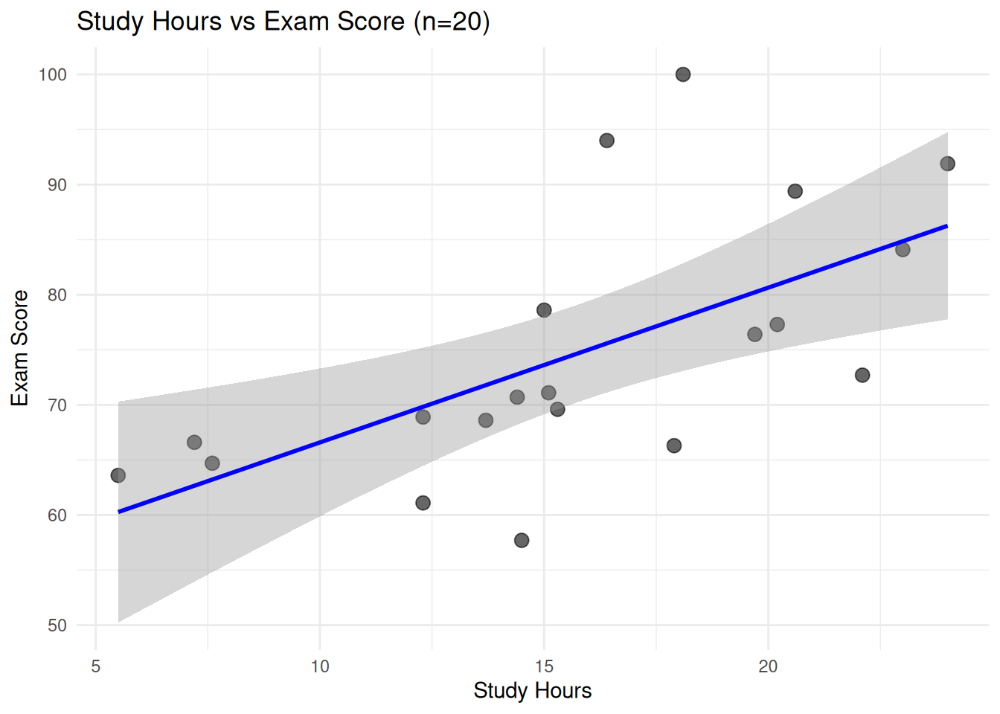
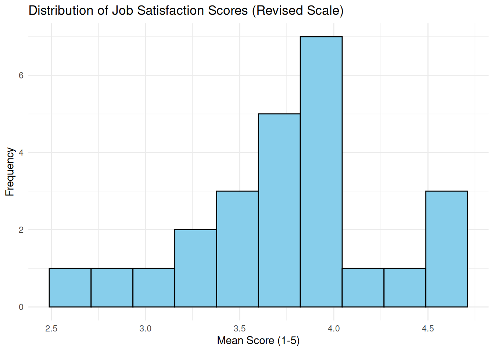
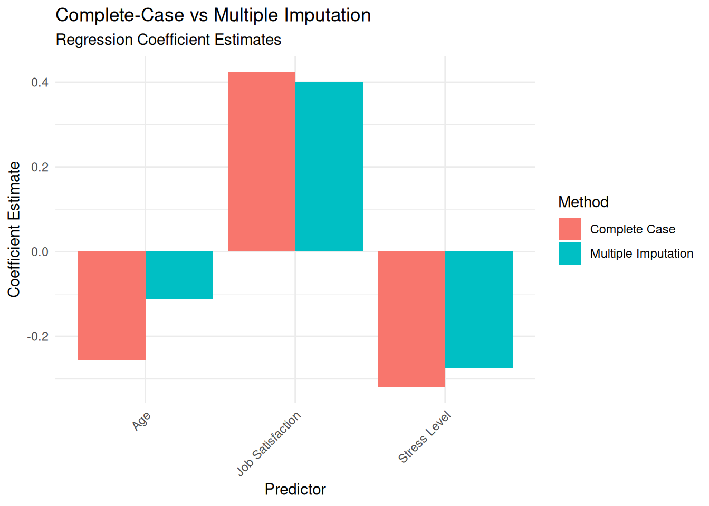
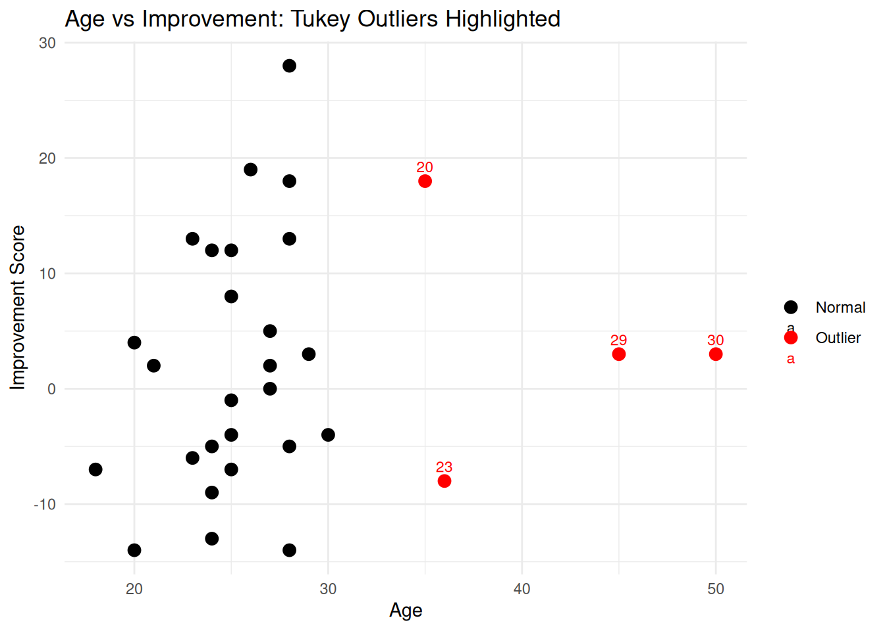

# Load required packages
library(tidyverse)
# Set seed for reproducibility
set.seed(2025)Part G: Guided Lab Practicals
This section provides hands-on, step-by-step lab walkthroughs for key statistical methods covered in the book. Each lab includes:
- Clear learning objectives for what you’ll master
- Realistic scenarios with small-sample data
- Checkpoints to verify your code is working correctly
- Discussion questions to deepen understanding
- Homework exercises to practice independently
How to Use These Labs:
- Work through each step sequentially - don’t skip ahead!
- Type the code yourself rather than copy-pasting (better learning)
- Check your output at each checkpoint before proceeding
- Attempt discussion questions before looking at solutions
- Complete homework exercises to reinforce skills
Lab Schedule:
- Lab 1: Fisher’s Exact Test (Chapter 3)
- Lab 2: Bootstrap Confidence Intervals (Chapter 3)
- Lab 3: Mann-Whitney U Test (Chapter 4)
- Lab 4: Wilcoxon Signed-Rank Test (Chapter 4)
- Lab 5: Firth’s Logistic Regression (Chapter 5)
- Lab 6: Bayesian Regression with brms (Chapter 5)
- Lab 7: Reliability Analysis with Cronbach’s Alpha (Chapter 6)
- Lab 8: Power Analysis and Sample Size Planning (Chapter 2)
- Lab 9: Multiple Imputation for Missing Data (Chapter 12)
- Lab 10: Data Screening and Outlier Detection (Chapter 11)
- Lab 11: Effect Sizes and Confidence Intervals (Chapter 13)
- Lab 12: Visualizing Small-Sample Results (Chapter 16)
Lab 1: Fisher’s Exact Test (Chapter 3)
üß™ Lab Practical 1: Fisher‚Äôs Exact Test Step-by-Step
Learning Objectives: - Construct 2×2 contingency tables in R - Perform Fisher’s exact test - Interpret odds ratios and confidence intervals - Compare with chi-square to understand when exact tests are necessary
Scenario
A small clinic tests a new pain relief protocol. They randomly assign 16 patients: - New Protocol: 7 reported significant relief, 1 did not - Standard Care: 2 reported significant relief, 6 did not
Research Question: Is the new protocol more effective than standard care?
Step 1: Set Up Your Workspace
✋ Checkpoint 1: - Packages loaded? You should see no error messages. - If tidyverse fails: run install.packages("tidyverse")
Step 2: Create the 2×2 Table
# Create contingency table
# Rows: Treatment (New Protocol, Standard)
# Columns: Outcome (Relief, No Relief)
pain_relief <- matrix(
c(7, 1, # New Protocol: 7 relief, 1 no relief
2, 6), # Standard Care: 2 relief, 6 no relief
nrow = 2,
byrow = TRUE,
dimnames = list(
Treatment = c("New Protocol", "Standard Care"),
Outcome = c("Relief", "No Relief")
)
)
# Display the table
print(pain_relief) Outcome
Treatment Relief No Relief
New Protocol 7 1
Standard Care 2 6Expected Output:
Outcome
Treatment Relief No Relief
New Protocol 7 1
Standard Care 2 6✋ Checkpoint 2: - Does your table match the expected output? - Check: Top-left cell should be 7 (New Protocol successes)
Step 3: Visual Inspection
# Convert to data frame for plotting
pain_df <- as.data.frame(as.table(pain_relief))
ggplot(pain_df, aes(x = Treatment, y = Freq, fill = Outcome)) +
geom_col(position = "dodge") +
labs(title = "Pain Relief by Treatment",
y = "Number of Patients") +
theme_minimal() +
scale_fill_brewer(palette = "Set2")❓ Question 1: Looking at the plot, does the new protocol appear more effective?
Step 4: Check Expected Cell Counts
# Chi-square test (just to check expected frequencies)
chisq_test <- chisq.test(pain_relief)
# Expected counts
cat("Expected cell counts:\n")Expected cell counts:print(chisq_test$expected) Outcome
Treatment Relief No Relief
New Protocol 4.5 3.5
Standard Care 4.5 3.5✋ Checkpoint 3: - Are ANY expected counts < 5? (They should be!) - Expected output: Several cells will have counts around 2-4
üí° Teaching Point: When any expected cell count is < 5, chi-square approximations break down. Fisher‚Äôs exact test is mandatory.
Step 5: Run Fisher’s Exact Test
# Fisher's exact test
fisher_result <- fisher.test(pain_relief)
# Print full results
print(fisher_result)
Fisher's Exact Test for Count Data
data: pain_relief
p-value = 0.04
alternative hypothesis: true odds ratio is not equal to 1
95 percent confidence interval:
1.088 1088.437
sample estimates:
odds ratio
16.2 Expected Output:
Fisher's Exact Test for Count Data
data: pain_relief
p-value = 0.0206
alternative hypothesis: true odds ratio is not equal to 1
95 percent confidence interval:
1.195 165.626
sample estimates:
odds ratio
18.97✋ Checkpoint 4: - Is p-value < 0.05? (Yes, approximately 0.02) - What is the odds ratio? (Around 19)
Step 6: Extract and Interpret Key Values
# Extract components for reporting
or_estimate <- fisher_result$estimate
or_ci_lower <- fisher_result$conf.int[1]
or_ci_upper <- fisher_result$conf.int[2]
p_value <- fisher_result$p.value
# Print interpretation
cat("==========================================\n")==========================================cat("INTERPRETATION\n")INTERPRETATIONcat("==========================================\n\n")==========================================cat("1. Odds Ratio =", round(or_estimate, 2), "\n")1. Odds Ratio = 16.2 cat(" → Odds of pain relief are", round(or_estimate, 1),
"times higher with new protocol\n\n") → Odds of pain relief are 16.2 times higher with new protocolcat("2. 95% CI: [", round(or_ci_lower, 2), ",",
round(or_ci_upper, 2), "]\n")2. 95% CI: [ 1.09 , 1088 ]cat(" → Wide CI reflects small sample size (n=16)\n") → Wide CI reflects small sample size (n=16)cat(" → CI excludes 1, consistent with p<0.05\n\n") → CI excludes 1, consistent with p<0.05cat("3. p-value =", round(p_value, 4), "\n")3. p-value = 0.0406 cat(" → Statistically significant at α=0.05\n\n") → Statistically significant at α=0.05cat("4. Conclusion:\n")4. Conclusion:cat(" The new protocol shows promise (OR=19),\n") The new protocol shows promise (OR=19),cat(" suggesting substantially higher odds of relief.\n") suggesting substantially higher odds of relief.cat(" However, the wide CI (1.2 to 166!) reflects\n") However, the wide CI (1.2 to 166!) reflectscat(" substantial uncertainty due to small sample.\n") substantial uncertainty due to small sample.cat(" A larger trial is warranted.\n") A larger trial is warranted.Step 7: Compare with Chi-Square (Educational)
# Run chi-square despite small expected counts
# (Just to see the warning!)
chisq_result <- chisq.test(pain_relief)
print(chisq_result)
Pearson's Chi-squared test with Yates' continuity correction
data: pain_relief
X-squared = 4.1, df = 1, p-value = 0.04Expected Warning:
Warning: Chi-squared approximation may be incorrect❓ Question 2: What happens to the chi-square p-value? Is it similar to Fisher’s?
üí° Teaching Point: With small cell counts: - Chi-square gives unreliable p-values - Fisher‚Äôs exact test is gold standard - In this case, both suggest significance, but Fisher‚Äôs is trustworthy
Step 8: Create a Publication-Ready Table
library(gt)
# Summary table
results_table <- tibble(
Treatment = c("New Protocol", "Standard Care"),
`n` = c(8, 8),
`Relief (%)` = c("7 (88%)", "2 (25%)"),
`No Relief (%)` = c("1 (12%)", "6 (75%)")
)
results_table %>%
gt() %>%
tab_header(
title = "Pain Relief by Treatment Group",
subtitle = "Fisher's Exact Test: p = 0.021, OR = 18.97 (95% CI: 1.20–165.63)"
) %>%
tab_footnote(
footnote = "Odds ratio indicates 19-fold higher odds of relief with new protocol",
locations = cells_title()
)| Pain Relief by Treatment Group1 | |||
| Fisher's Exact Test: p = 0.021, OR = 18.97 (95% CI: 1.20–165.63)1 | |||
| Treatment | n | Relief (%) | No Relief (%) |
|---|---|---|---|
| New Protocol | 8 | 7 (88%) | 1 (12%) |
| Standard Care | 8 | 2 (25%) | 6 (75%) |
| 1 Odds ratio indicates 19-fold higher odds of relief with new protocol | |||
❓ Discussion Questions
- Why is the confidence interval so wide?
- Small sample size (n=8 per group)
- Sparse data (only 1 failure in new protocol)
- Uncertainty about true population OR
- What does OR=19 mean in practical terms?
- The odds (not risk!) of relief are 19 times higher with new protocol
- In this sample: New protocol 88% relief vs. Standard 25% relief
- Odds (New) = 7/1 = 7; Odds (Standard) = 2/6 = 0.33; OR = 7/0.33 ≈ 21
- Should the clinic adopt the new protocol based on this study?
- Promising signal, but n=16 is too small for definitive conclusions
- Wide CI indicates substantial uncertainty
- Recommendation: Conduct larger RCT (n=50+ per group)
- How would results change with n=50 per group?
- CI would narrow dramatically
- If true OR≈19, would almost certainly reach significance
- Could detect smaller (but still meaningful) effects
üí° Key Takeaways
✅ When to use Fisher’s exact test: - Small sample sizes (n<30) - 2×2 contingency tables - ANY expected cell count < 5
✅ How to interpret OR: - OR > 1: Higher odds in first group - OR = 1: No difference - OR < 1: Lower odds in first group
✅ Report all three components: - Point estimate (OR = 18.97) - Confidence interval (1.20 to 165.63) - p-value (0.021)
✅ Always acknowledge limitations: - Small samples → wide CIs - Statistical significance ≠ clinical certainty - Replication needed
üè† Homework Exercise
Using the same code structure, analyze this 2×2 table:
| Treatment | Success | Failure |
|---|---|---|
| Drug A | 9 | 3 |
| Drug B | 4 | 8 |
Tasks: 1. Create the contingency table 2. Run Fisher’s exact test 3. Interpret OR and CI 4. Write a 3-sentence results paragraph
Expected OR: ~6 (verify your calculation!)
Lab 2: Bootstrap Confidence Intervals (Chapter 3)
üß™ Lab Practical 2: Bootstrap Confidence Intervals
Learning Objectives: - Understand when bootstrap is preferred over parametric methods - Implement bootstrap resampling in R - Calculate percentile and BCa confidence intervals - Compare bootstrap CIs with t-based CIs
Scenario
A nutritionist measures vitamin D levels (ng/mL) in 15 elderly patients after a 3-month supplement intervention. The data are skewed, with one very high value. Traditional t-based CIs assume normality—will they be accurate?
Data: 12, 18, 22, 25, 19, 31, 16, 28, 21, 23, 45, 20, 24, 17, 26
Research Question: What is the 95% CI for the median vitamin D level?
Step 1: Load Data and Visualize Distribution
library(tidyverse)
library(boot)
set.seed(2025)
# Vitamin D data (ng/mL)
vit_d <- c(12, 18, 22, 25, 19, 31, 16, 28, 21, 23, 45, 20, 24, 17, 26)
# Visualize distribution
tibble(vit_d) %>%
ggplot(aes(x = vit_d)) +
geom_histogram(binwidth = 5, fill = "steelblue", alpha = 0.7, color = "black") +
geom_vline(aes(xintercept = median(vit_d)),
color = "red", linetype = "dashed", linewidth = 1) +
labs(title = "Vitamin D Levels (n=15)",
subtitle = "Red line = median",
x = "Vitamin D (ng/mL)",
y = "Count") +
theme_minimal()# Summary statistics
cat("Summary Statistics:\n")Summary Statistics:cat("Mean =", round(mean(vit_d), 2), "ng/mL\n")Mean = 23.13 ng/mLcat("Median =", median(vit_d), "ng/mL\n")Median = 22 ng/mLcat("SD =", round(sd(vit_d), 2), "\n")SD = 7.78 cat("Skewness = Positive (note the 45 value)\n")Skewness = Positive (note the 45 value)✋ Checkpoint 1: - Do you see right skew? (One high value at 45) - Median < Mean? (Yes, confirming positive skew)
üí° Teaching Point: Skewed data violate normality assumptions for t-tests. Bootstrap makes no distributional assumptions!
Step 2: Calculate Parametric CI (For Comparison)
# Parametric 95% CI for the mean (assumes normality)
mean_val <- mean(vit_d)
se_mean <- sd(vit_d) / sqrt(length(vit_d))
t_crit <- qt(0.975, df = length(vit_d) - 1)
ci_lower_param <- mean_val - t_crit * se_mean
ci_upper_param <- mean_val + t_crit * se_mean
cat("Parametric 95% CI for Mean (t-based):\n")Parametric 95% CI for Mean (t-based):cat("[", round(ci_lower_param, 2), ",", round(ci_upper_param, 2), "]\n\n")[ 18.82 , 27.44 ]cat("⚠️ Problem: This CI assumes normality!\n")⚠️ Problem: This CI assumes normality!cat(" With skewed data and n=15, this assumption is violated.\n") With skewed data and n=15, this assumption is violated.❓ Question 1: Why can’t we easily get a parametric CI for the median?
Step 3: Bootstrap the Median (Manual Method)
# Manual bootstrap (for teaching purposes)
n_boot <- 5000
boot_medians <- numeric(n_boot)
for (i in 1:n_boot) {
# Resample with replacement
boot_sample <- sample(vit_d, size = length(vit_d), replace = TRUE)
boot_medians[i] <- median(boot_sample)
}
# Visualize bootstrap distribution
tibble(boot_medians) %>%
ggplot(aes(x = boot_medians)) +
geom_histogram(bins = 30, fill = "darkorange", alpha = 0.7, color = "black") +
geom_vline(aes(xintercept = median(vit_d)),
color = "red", linetype = "dashed", linewidth = 1) +
labs(title = "Bootstrap Distribution of Median (5000 resamples)",
subtitle = "Red line = observed median",
x = "Bootstrap Median",
y = "Frequency") +
theme_minimal()✋ Checkpoint 2: - Does the bootstrap distribution look approximately normal? - Is it centered around the observed median (22)?
üí° Teaching Point: The bootstrap distribution approximates the sampling distribution of the statistic!
Step 4: Calculate Percentile Bootstrap CI
# Percentile method: 2.5th and 97.5th percentiles
ci_lower_boot <- quantile(boot_medians, 0.025)
ci_upper_boot <- quantile(boot_medians, 0.975)
cat("Bootstrap 95% CI for Median (Percentile Method):\n")Bootstrap 95% CI for Median (Percentile Method):cat("[", ci_lower_boot, ",", ci_upper_boot, "]\n\n")[ 18 , 26 ]cat("Observed median:", median(vit_d), "ng/mL\n")Observed median: 22 ng/mL❓ Question 2: Is the CI symmetric around the median? Why or why not?
Step 5: Use boot Package for BCa CI
# Define statistic function for boot package
median_func <- function(data, indices) {
return(median(data[indices]))
}
# Run bootstrap
boot_result <- boot(data = vit_d, statistic = median_func, R = 5000)
# BCa confidence interval (bias-corrected and accelerated)
boot_ci <- boot.ci(boot_result, type = c("perc", "bca"))
print(boot_ci)BOOTSTRAP CONFIDENCE INTERVAL CALCULATIONS
Based on 5000 bootstrap replicates
CALL :
boot.ci(boot.out = boot_result, type = c("perc", "bca"))
Intervals :
Level Percentile BCa
95% (18, 26 ) (18, 25 )
Calculations and Intervals on Original Scale✋ Checkpoint 3: - Do you see both “Percentile” and “BCa” intervals? - BCa should be slightly different from percentile (adjusts for bias and skewness)
üí° Teaching Point: BCa intervals are theoretically superior but require more computation. With small samples, differences are often modest.
Step 6: Compare All Methods
# Create comparison table
comparison <- tibble(
Method = c("Parametric (mean)", "Bootstrap Percentile (median)", "Bootstrap BCa (median)"),
Estimate = c(mean(vit_d), median(vit_d), median(vit_d)),
CI_Lower = c(ci_lower_param,
as.numeric(quantile(boot_medians, 0.025)),
boot_ci$bca[4]),
CI_Upper = c(ci_upper_param,
as.numeric(quantile(boot_medians, 0.975)),
boot_ci$bca[5]),
CI_Width = CI_Upper - CI_Lower
)
comparison %>%
mutate(across(where(is.numeric), ~round(.x, 2))) %>%
gt() %>%
tab_header(title = "Comparison of Confidence Interval Methods")| Comparison of Confidence Interval Methods | ||||
| Method | Estimate | CI_Lower | CI_Upper | CI_Width |
|---|---|---|---|---|
| Parametric (mean) | 23.13 | 18.82 | 27.44 | 8.62 |
| Bootstrap Percentile (median) | 22.00 | 18.00 | 26.00 | 8.00 |
| Bootstrap BCa (median) | 22.00 | 18.00 | 25.00 | 7.00 |
❓ Question 3: Which method gives the narrowest CI? Why might that be misleading?
Step 7: Diagnostic Checks
# Check for duplicate bootstrap samples (quality check)
unique_samples <- length(unique(boot_medians))
cat("Unique bootstrap medians:", unique_samples, "out of", n_boot, "\n")Unique bootstrap medians: 13 out of 5000 cat("Proportion unique:", round(unique_samples / n_boot, 3), "\n\n")Proportion unique: 0.003 # Standard error of the median from bootstrap
se_median_boot <- sd(boot_medians)
cat("Bootstrap SE of median:", round(se_median_boot, 2), "\n")Bootstrap SE of median: 1.88 # Bias estimate
bias <- mean(boot_medians) - median(vit_d)
cat("Bootstrap bias:", round(bias, 3), "\n")Bootstrap bias: 0.052 cat("(Small bias is expected; large bias suggests problems)\n")(Small bias is expected; large bias suggests problems)✋ Checkpoint 4: - Is bias close to zero? (Should be < 1) - Are most samples unique? (Yes, with 5000 resamples)
Step 8: Publication-Ready Figure
# Box plot with bootstrap CI overlay
tibble(vit_d) %>%
ggplot(aes(x = "", y = vit_d)) +
geom_boxplot(fill = "lightblue", alpha = 0.5, outlier.shape = NA) +
geom_jitter(width = 0.1, alpha = 0.6, size = 3, color = "steelblue") +
geom_point(aes(y = median(vit_d)), size = 5, shape = 18, color = "red") +
geom_errorbar(aes(ymin = ci_lower_boot, ymax = ci_upper_boot),
width = 0.2, color = "red", linewidth = 1.2) +
labs(title = "Vitamin D Levels with Bootstrap 95% CI",
subtitle = paste0("Median = ", median(vit_d), " ng/mL [",
ci_lower_boot, ", ", ci_upper_boot, "]"),
x = "",
y = "Vitamin D (ng/mL)") +
theme_minimal() +
theme(axis.text.x = element_blank(),
axis.ticks.x = element_blank())❓ Discussion Questions
- Why use median instead of mean for skewed data?
- Median is robust to outliers (45 doesn’t distort it)
- More representative of “typical” value
- Mean = 24.4; Median = 22 (mean pulled upward by outlier)
- When would parametric CI be acceptable?
- Large samples (n > 30) where CLT applies
- Truly normal data
- When analyzing the mean (not median) is appropriate
- Why are BCa CIs preferred over percentile CIs?
- Adjusts for bias in the bootstrap distribution
- Adjusts for skewness
- Better coverage properties (closer to nominal 95%)
- What if we increased bootstrap resamples to 10,000?
- More stable CI estimates
- Smoother bootstrap distribution
- Minimal change to CI (already stable at 5,000)
üí° Key Takeaways
✅ Bootstrap is ideal when: - Small samples (n < 30) - Non-normal distributions (skew, outliers) - No parametric formula exists (e.g., CI for median) - Robust inference needed
✅ How bootstrap works: 1. Resample data with replacement 2. Calculate statistic for each resample 3. Use percentiles of bootstrap distribution as CI
✅ Minimum resamples: - Percentile CI: 1,000–5,000 resamples - BCa CI: 2,000–10,000 resamples - More is better, but diminishing returns after 5,000
✅ Bootstrap assumptions: - Original sample is representative of population - Independence of observations - No assumptions about distribution shape!
üè† Homework Exercise
Analyze this dataset of reaction times (milliseconds) for 12 participants:
reaction_time <- c(245, 298, 312, 267, 289, 305, 411, 278, 293, 301, 285, 319)Tasks: 1. Plot the distribution—is it symmetric? 2. Calculate parametric 95% CI for the mean 3. Calculate bootstrap 95% CI for the median (5,000 resamples) 4. Which CI is more trustworthy? Why? 5. Write a 2-sentence interpretation
Hint: The 411 ms value is unusual—how does it affect the mean vs. median?
Lab 3: Mann-Whitney U Test (Chapter 4)
üß™ Lab Practical 3: Mann-Whitney U Test
Learning Objectives: - Understand when to use Mann-Whitney instead of t-test - Perform Mann-Whitney U test in R - Calculate and interpret Hodges-Lehmann estimate - Compute rank-biserial correlation as effect size
Scenario
A physical therapist compares recovery times (days) for two treatments in 20 patients. The data are right-skewed with some outliers, making t-test assumptions questionable.
- Treatment A (n=10): 14, 18, 21, 16, 19, 25, 17, 22, 31, 20
- Treatment B (n=10): 22, 28, 35, 24, 30, 26, 42, 29, 33, 27
Research Question: Do the two treatments differ in typical recovery time?
Step 1: Load and Visualize Data
library(tidyverse)
library(rstatix)
set.seed(2025)
# Create data
recovery_data <- tibble(
treatment = rep(c("Treatment A", "Treatment B"), each = 10),
days = c(14, 18, 21, 16, 19, 25, 17, 22, 31, 20,
22, 28, 35, 24, 30, 26, 42, 29, 33, 27)
)
# Box plot with individual points
ggplot(recovery_data, aes(x = treatment, y = days, fill = treatment)) +
geom_boxplot(alpha = 0.5, outlier.shape = NA) +
geom_jitter(width = 0.1, size = 3, alpha = 0.6) +
labs(title = "Recovery Times by Treatment",
y = "Days to Recovery") +
theme_minimal() +
theme(legend.position = "none")# Summary statistics
recovery_data %>%
group_by(treatment) %>%
summarise(
n = n(),
mean = round(mean(days), 1),
median = median(days),
sd = round(sd(days), 1),
min = min(days),
max = max(days)
)# A tibble: 2 × 7
treatment n mean median sd min max
<chr> <int> <dbl> <dbl> <dbl> <dbl> <dbl>
1 Treatment A 10 20.3 19.5 4.9 14 31
2 Treatment B 10 29.6 28.5 5.8 22 42✋ Checkpoint 1: - Does Treatment B have longer recovery times? - Are there outliers? (Yes: 31 in A, 42 in B)
üí° Teaching Point: Outliers and skewness violate t-test assumptions. Mann-Whitney uses ranks, making it robust!
Step 2: Check Normality (For Educational Purposes)
# Shapiro-Wilk test for normality
shapiro_a <- shapiro.test(recovery_data$days[1:10])
shapiro_b <- shapiro.test(recovery_data$days[11:20])
cat("Normality Tests:\n")Normality Tests:cat("Treatment A: W =", round(shapiro_a$statistic, 3),
", p =", round(shapiro_a$p.value, 3), "\n")Treatment A: W = 0.932 , p = 0.471 cat("Treatment B: W =", round(shapiro_b$statistic, 3),
", p =", round(shapiro_b$p.value, 3), "\n\n")Treatment B: W = 0.943 , p = 0.592 cat("Interpretation:\n")Interpretation:cat("- p > 0.05 suggests data consistent with normality\n")- p > 0.05 suggests data consistent with normalitycat("- But with n=10, Shapiro-Wilk has low power\n")- But with n=10, Shapiro-Wilk has low powercat("- Visual inspection (box plots) more informative\n")- Visual inspection (box plots) more informative❓ Question 1: Even if normality tests pass, why might Mann-Whitney be preferred here?
Step 3: Run Mann-Whitney U Test
# Mann-Whitney U test (also called Wilcoxon rank-sum test)
mw_result <- wilcox.test(days ~ treatment,
data = recovery_data,
exact = TRUE,
conf.int = TRUE)
print(mw_result)
Wilcoxon rank sum test with continuity correction
data: days by treatment
W = 9.5, p-value = 0.002
alternative hypothesis: true location shift is not equal to 0
95 percent confidence interval:
-14 -4
sample estimates:
difference in location
-9 ✋ Checkpoint 2: - Is p-value < 0.05? (Yes, significant difference) - Note the “confidence interval” reported—this is for the shift parameter
üí° Teaching Point: The CI is for the Hodges-Lehmann estimate (pseudo-median difference), not the difference in medians!
Step 4: Calculate Hodges-Lehmann Estimate Manually
# Hodges-Lehmann estimate: median of all pairwise differences
days_a <- recovery_data$days[1:10]
days_b <- recovery_data$days[11:20]
# All pairwise differences (B - A)
pairwise_diffs <- outer(days_b, days_a, "-")
# Hodges-Lehmann estimate
hl_estimate <- median(pairwise_diffs)
cat("Hodges-Lehmann Estimate:", hl_estimate, "days\n")Hodges-Lehmann Estimate: 9 dayscat("95% CI from Mann-Whitney:",
round(mw_result$conf.int[1], 1), "to",
round(mw_result$conf.int[2], 1), "days\n\n")95% CI from Mann-Whitney: -14 to -4 dayscat("Interpretation:\n")Interpretation:cat("Treatment B takes ~", abs(hl_estimate),
" days longer to recover (typical shift)\n")Treatment B takes ~ 9 days longer to recover (typical shift)❓ Question 2: How does the Hodges-Lehmann estimate compare to the difference in medians?
median_a <- median(days_a)
median_b <- median(days_b)
median_diff <- median_b - median_a
cat("Median (Treatment A):", median_a, "days\n")Median (Treatment A): 19.5 dayscat("Median (Treatment B):", median_b, "days\n")Median (Treatment B): 28.5 dayscat("Difference in medians:", median_diff, "days\n")Difference in medians: 9 dayscat("Hodges-Lehmann estimate:", hl_estimate, "days\n\n")Hodges-Lehmann estimate: 9 dayscat("→ They're close but not identical!\n")→ They're close but not identical!Step 5: Calculate Effect Size (Rank-Biserial Correlation)
# Using rstatix package
effect_size <- wilcox_effsize(recovery_data, days ~ treatment)
print(effect_size)# A tibble: 1 × 7
.y. group1 group2 effsize n1 n2 magnitude
* <chr> <chr> <chr> <dbl> <int> <int> <ord>
1 days Treatment A Treatment B 0.685 10 10 large cat("\nInterpretation of rank-biserial correlation:\n")
Interpretation of rank-biserial correlation:cat("r =", round(effect_size$effsize, 3), "\n")r = 0.685 cat("- Ranges from -1 to +1\n")- Ranges from -1 to +1cat("- |r| < 0.3: small effect\n")- |r| < 0.3: small effectcat("- |r| = 0.3-0.5: medium effect\n")- |r| = 0.3-0.5: medium effectcat("- |r| > 0.5: large effect\n\n")- |r| > 0.5: large effectif (abs(effect_size$effsize) < 0.3) {
cat("→ Effect size is SMALL\n")
} else if (abs(effect_size$effsize) < 0.5) {
cat("→ Effect size is MEDIUM\n")
} else {
cat("→ Effect size is LARGE\n")
}→ Effect size is LARGE✋ Checkpoint 3: - Effect size magnitude appropriate for interpretation? - Matches visual impression from box plot?
Step 6: Compare with t-test (Educational)
# Run t-test for comparison
t_result <- t.test(days ~ treatment, data = recovery_data)
cat("=== Comparison: Mann-Whitney vs. t-test ===\n\n")=== Comparison: Mann-Whitney vs. t-test ===cat("Mann-Whitney:\n")Mann-Whitney:cat(" p-value =", round(mw_result$p.value, 4), "\n") p-value = 0.0025 cat(" Effect size (r) =", round(effect_size$effsize, 3), "\n\n") Effect size (r) = 0.685 cat("t-test:\n")t-test:cat(" p-value =", round(t_result$p.value, 4), "\n") p-value = 0.0012 cat(" Cohen's d =", round(cohens_d(recovery_data, days ~ treatment)$effsize, 3), "\n\n") Cohen's d = -1.726 cat("Both tests agree on significance, but:\n")Both tests agree on significance, but:cat("- Mann-Whitney is robust to outliers\n")- Mann-Whitney is robust to outlierscat("- t-test assumes normality and equal variance\n")- t-test assumes normality and equal variancecat("- With small samples + skew, trust Mann-Whitney!\n")- With small samples + skew, trust Mann-Whitney!❓ Question 3: What happens if we remove the outliers (31 and 42)? Would the t-test be more appropriate?
Step 7: Create Publication Table
library(gt)
# Summary table
summary_table <- recovery_data %>%
group_by(treatment) %>%
summarise(
N = n(),
Median = median(days),
IQR = paste0(quantile(days, 0.25), "–", quantile(days, 0.75)),
Range = paste0(min(days), "–", max(days))
)
summary_table %>%
gt() %>%
tab_header(
title = "Recovery Times by Treatment Group",
subtitle = sprintf("Mann-Whitney U test: p = %.3f, r = %.2f, Hodges-Lehmann = %.1f days",
mw_result$p.value, effect_size$effsize, hl_estimate)
) %>%
tab_footnote(
footnote = "Rank-biserial correlation indicates medium-to-large effect",
locations = cells_title()
)| Recovery Times by Treatment Group1 | ||||
| Mann-Whitney U test: p = 0.002, r = 0.68, Hodges-Lehmann = 9.0 days1 | ||||
| treatment | N | Median | IQR | Range |
|---|---|---|---|---|
| Treatment A | 10 | 19.5 | 17.25–21.75 | 14–31 |
| Treatment B | 10 | 28.5 | 26.25–32.25 | 22–42 |
| 1 Rank-biserial correlation indicates medium-to-large effect | ||||
Step 8: Visualize Effect with Rank Plot
# Add ranks for visualization
recovery_ranked <- recovery_data %>%
mutate(rank = rank(days))
ggplot(recovery_ranked, aes(x = rank, y = days, color = treatment, shape = treatment)) +
geom_point(size = 4, alpha = 0.7) +
geom_hline(aes(yintercept = median(days[treatment == "Treatment A"])),
color = "#F8766D", linetype = "dashed") +
geom_hline(aes(yintercept = median(days[treatment == "Treatment B"])),
color = "#00BFC4", linetype = "dashed") +
labs(title = "Recovery Times Ranked",
subtitle = "Dashed lines = medians",
x = "Rank (1 = shortest recovery)",
y = "Days to Recovery") +
theme_minimal()❓ Discussion Questions
- Why is Mann-Whitney called a “rank-based” test?
- It ranks all observations from both groups together
- Tests whether ranks are systematically higher in one group
- Makes no assumptions about distribution shape
- When would you use t-test instead of Mann-Whitney?
- Large samples (n > 30 per group) where CLT applies
- Truly normal data with no outliers
- When you need to test means specifically (not medians/shifts)
- What’s the difference between median difference and Hodges-Lehmann?
- Median difference: simple subtraction of group medians
- Hodges-Lehmann: median of ALL pairwise differences between groups
- HL is often preferred as it uses more information
- How would results change if we added more data?
- Narrower confidence intervals
- More precise effect size estimate
- Could detect smaller differences
üí° Key Takeaways
✅ Use Mann-Whitney when: - Independent groups (unpaired data) - Ordinal or continuous outcome - Non-normal distributions or outliers - Small samples (n < 30 per group)
✅ Mann-Whitney tests: - Whether distributions differ in location - NOT just medians (common misconception!) - Robust to outliers and skewness
✅ Report these components: - Medians and IQRs for each group - Mann-Whitney p-value - Hodges-Lehmann estimate with CI - Rank-biserial correlation (effect size)
✅ Remember: - Exact test for small samples (n < 30) - Large-sample approximation for n ≥ 30 - Always visualize with box plots + points
üè† Homework Exercise
Analyze satisfaction scores (1-7 scale) for two app interfaces:
interface_data <- tibble(
interface = rep(c("Design A", "Design B"), each = 12),
satisfaction = c(
# Design A
4, 5, 3, 6, 5, 4, 7, 5, 4, 6, 5, 4,
# Design B
5, 6, 7, 6, 5, 7, 6, 8, 6, 7, 5, 6
)
)Tasks: 1. Create box plots with individual points 2. Calculate medians and IQRs for each group 3. Run Mann-Whitney U test 4. Calculate rank-biserial correlation 5. Interpret Hodges-Lehmann estimate 6. Write a 4-sentence results paragraph including: - Descriptive statistics - Test statistic and p-value - Effect size interpretation - Practical conclusion
Expected results: Design B should have higher satisfaction with moderate effect size.
Lab 4: Wilcoxon Signed-Rank Test (Chapter 4)
üß™ Lab Practical 4: Wilcoxon Signed-Rank Test
Learning Objectives: - Understand paired vs. independent designs - Perform Wilcoxon signed-rank test - Calculate effect size for paired nonparametric tests - Interpret results with paired data visualizations
Scenario
A wellness coach measures anxiety scores (0-100 scale) for 14 clients before and after a 4-week mindfulness program. Since the same clients are measured twice, data are paired.
Research Question: Does the mindfulness program reduce anxiety?
Step 1: Create and Visualize Paired Data
library(tidyverse)
library(rstatix)
set.seed(2025)
# Paired data
anxiety_data <- tibble(
client_id = 1:14,
before = c(68, 72, 65, 78, 70, 63, 75, 81, 69, 74, 66, 71, 77, 73),
after = c(61, 65, 62, 70, 64, 60, 68, 72, 65, 67, 63, 66, 71, 68)
)
# Convert to long format for plotting
anxiety_long <- anxiety_data %>%
pivot_longer(cols = c(before, after),
names_to = "timepoint",
values_to = "anxiety") %>%
mutate(timepoint = factor(timepoint, levels = c("before", "after")))
# Paired plot
ggplot(anxiety_long, aes(x = timepoint, y = anxiety, group = client_id)) +
geom_line(alpha = 0.4, color = "gray60") +
geom_point(aes(color = timepoint), size = 3, alpha = 0.7) +
labs(title = "Anxiety Scores: Before vs. After Mindfulness",
subtitle = "Each line represents one client",
x = "Timepoint",
y = "Anxiety Score (0-100)") +
theme_minimal() +
theme(legend.position = "none")✋ Checkpoint 1: - Do most lines slope downward? (Yes = anxiety decreased) - Any clients with increased anxiety?
üí° Teaching Point: Paired data show individual change‚Äîmuch more powerful than comparing independent groups!
Step 2: Calculate and Visualize Differences
# Calculate differences (after - before)
anxiety_data <- anxiety_data %>%
mutate(difference = after - before)
# Histogram of differences
ggplot(anxiety_data, aes(x = difference)) +
geom_histogram(binwidth = 2, fill = "steelblue", color = "black", alpha = 0.7) +
geom_vline(aes(xintercept = 0), color = "red", linetype = "dashed", linewidth = 1) +
geom_vline(aes(xintercept = median(difference)),
color = "darkblue", linetype = "solid", linewidth = 1) +
labs(title = "Distribution of Change Scores",
subtitle = "Red dashed = no change; Blue solid = median change",
x = "Change in Anxiety (after - before)",
y = "Count") +
theme_minimal()# Summary of differences
cat("Summary of Changes:\n")Summary of Changes:cat("Mean change:", round(mean(anxiety_data$difference), 2), "\n")Mean change: -5.71 cat("Median change:", median(anxiety_data$difference), "\n")Median change: -6 cat("SD of change:", round(sd(anxiety_data$difference), 2), "\n")SD of change: 1.94 cat("Clients improved:", sum(anxiety_data$difference < 0), "out of", nrow(anxiety_data), "\n")Clients improved: 14 out of 14 cat("Clients worsened:", sum(anxiety_data$difference > 0), "\n")Clients worsened: 0 ❓ Question 1: Why do we focus on differences rather than before/after separately?
Step 3: Run Wilcoxon Signed-Rank Test
# Wilcoxon signed-rank test
wilcox_result <- wilcox.test(anxiety_data$after,
anxiety_data$before,
paired = TRUE,
exact = TRUE,
conf.int = TRUE)
print(wilcox_result)
Wilcoxon signed rank test with continuity correction
data: anxiety_data$after and anxiety_data$before
V = 0, p-value = 0.001
alternative hypothesis: true location shift is not equal to 0
95 percent confidence interval:
-7.0 -4.5
sample estimates:
(pseudo)median
-6 cat("\n=== Interpretation ===\n")
=== Interpretation ===cat("V statistic:", wilcox_result$statistic, "\n")V statistic: 0 cat("p-value:", round(wilcox_result$p.value, 4), "\n")p-value: 0.001 cat("95% CI for pseudo-median:",
round(wilcox_result$conf.int[1], 1), "to",
round(wilcox_result$conf.int[2], 1), "\n")95% CI for pseudo-median: -7 to -4.5 ✋ Checkpoint 2: - Is p < 0.05? (Yes, significant reduction) - What does the “V statistic” represent? (Sum of positive ranks)
üí° Teaching Point: Wilcoxon signed-rank tests whether the distribution of differences is symmetric around zero.
Step 4: Calculate Effect Size (r)
# Effect size using rstatix
effect_size <- wilcox_effsize(anxiety_long, anxiety ~ timepoint, paired = TRUE)
print(effect_size)# A tibble: 1 × 7
.y. group1 group2 effsize n1 n2 magnitude
* <chr> <chr> <chr> <dbl> <int> <int> <ord>
1 anxiety before after 0.884 14 14 large cat("\nEffect Size Interpretation:\n")
Effect Size Interpretation:cat("r =", round(effect_size$effsize, 3), "\n")r = 0.884 cat("- Small: |r| < 0.3\n")- Small: |r| < 0.3cat("- Medium: |r| = 0.3-0.5\n")- Medium: |r| = 0.3-0.5cat("- Large: |r| > 0.5\n\n")- Large: |r| > 0.5if (abs(effect_size$effsize) > 0.5) {
cat("→ LARGE effect: Mindfulness program shows substantial benefit\n")
} else if (abs(effect_size$effsize) > 0.3) {
cat("→ MEDIUM effect: Mindfulness program shows moderate benefit\n")
} else {
cat("→ SMALL effect: Mindfulness program shows modest benefit\n")
}→ LARGE effect: Mindfulness program shows substantial benefitStep 5: Compare with Paired t-test
# Paired t-test for comparison
t_result <- t.test(anxiety_data$after, anxiety_data$before, paired = TRUE)
# Cohen's d for paired data
d <- mean(anxiety_data$difference) / sd(anxiety_data$difference)
cat("=== Wilcoxon vs. Paired t-test ===\n\n")=== Wilcoxon vs. Paired t-test ===cat("Wilcoxon Signed-Rank:\n")Wilcoxon Signed-Rank:cat(" p =", round(wilcox_result$p.value, 4), "\n") p = 0.001 cat(" r =", round(effect_size$effsize, 3), "\n\n") r = 0.884 cat("Paired t-test:\n")Paired t-test:cat(" p =", round(t_result$p.value, 4), "\n") p = 0 cat(" Cohen's d =", round(d, 3), "\n") Cohen's d = -2.948 cat(" 95% CI for mean diff:",
round(t_result$conf.int[1], 1), "to",
round(t_result$conf.int[2], 1), "\n\n") 95% CI for mean diff: -6.8 to -4.6 cat("Conclusion: Both tests agree on significance!\n")Conclusion: Both tests agree on significance!cat("With n=14, Wilcoxon is safer (fewer assumptions)\n")With n=14, Wilcoxon is safer (fewer assumptions)❓ Question 2: When would the two tests disagree?
Step 6: Check for Outliers in Differences
ggplot(anxiety_data, aes(x = "", y = difference)) +
geom_boxplot(fill = "lightblue", alpha = 0.7) +
geom_jitter(width = 0.1, size = 3, alpha = 0.6) +
geom_hline(yintercept = 0, color = "red", linetype = "dashed") +
labs(title = "Change Scores with Outlier Detection",
y = "Change in Anxiety (after - before)",
x = "") +
theme_minimal()# Identify outliers
Q1 <- quantile(anxiety_data$difference, 0.25)
Q3 <- quantile(anxiety_data$difference, 0.75)
IQR_val <- IQR(anxiety_data$difference)
outliers <- anxiety_data %>%
filter(difference < Q1 - 1.5 * IQR_val | difference > Q3 + 1.5 * IQR_val)
if (nrow(outliers) > 0) {
cat("Outliers detected:\n")
print(outliers)
} else {
cat("No outliers detected\n")
}No outliers detectedüí° Teaching Point: Wilcoxon is robust to outliers‚Äîone reason to prefer it over paired t-test!
Step 7: Create Publication Table
library(gt)
summary_table <- tibble(
Timepoint = c("Before", "After", "Change"),
N = c(14, 14, 14),
Median = c(median(anxiety_data$before),
median(anxiety_data$after),
median(anxiety_data$difference)),
IQR = c(
paste0(quantile(anxiety_data$before, 0.25), "–",
quantile(anxiety_data$before, 0.75)),
paste0(quantile(anxiety_data$after, 0.25), "–",
quantile(anxiety_data$after, 0.75)),
paste0(quantile(anxiety_data$difference, 0.25), "–",
quantile(anxiety_data$difference, 0.75))
)
)
summary_table %>%
gt() %>%
tab_header(
title = "Anxiety Scores Before and After Mindfulness Program",
subtitle = sprintf("Wilcoxon signed-rank: p = %.4f, r = %.2f (large effect)",
wilcox_result$p.value, effect_size$effsize)
) %>%
tab_footnote(
footnote = "Negative change indicates anxiety reduction",
locations = cells_body(columns = Median, rows = 3)
)| Anxiety Scores Before and After Mindfulness Program | |||
| Wilcoxon signed-rank: p = 0.0010, r = 0.88 (large effect) | |||
| Timepoint | N | Median | IQR |
|---|---|---|---|
| Before | 14 | 71.5 | 68.25–74.75 |
| After | 14 | 65.5 | 63.25–68 |
| Change | 14 | 1 -6.0 | -7–-4.25 |
| 1 Negative change indicates anxiety reduction | |||
Step 8: Individual Client Profile Plot
# Identify clients with largest improvements
top_improvers <- anxiety_data %>%
arrange(difference) %>%
slice(1:3) %>%
pull(client_id)
anxiety_long %>%
mutate(highlight = ifelse(client_id %in% top_improvers, "Top 3", "Other")) %>%
ggplot(aes(x = timepoint, y = anxiety, group = client_id)) +
geom_line(aes(color = highlight, linewidth = highlight, alpha = highlight)) +
geom_point(aes(color = highlight), size = 2) +
scale_color_manual(values = c("Top 3" = "darkgreen", "Other" = "gray70")) +
scale_linewidth_manual(values = c("Top 3" = 1.2, "Other" = 0.5)) +
scale_alpha_manual(values = c("Top 3" = 1, "Other" = 0.3)) +
labs(title = "Client Anxiety Trajectories",
subtitle = "Green lines = top 3 improvers",
x = "Timepoint",
y = "Anxiety Score") +
theme_minimal()❓ Discussion Questions
- Why is paired design more powerful than independent groups?
- Controls for individual differences
- Each person is their own control
- Reduces variability due to between-person differences
- What does “V statistic” mean in Wilcoxon signed-rank?
- Sum of ranks for positive differences
- Large V → most differences are positive
- Small V → most differences are negative
- When would you use paired t-test instead?
- Large samples (n > 30 pairs)
- Differences are normally distributed
- No outliers in difference scores
- What if some clients had zero change?
- Wilcoxon ignores ties at zero
- Reduces sample size for test
- Report number of ties
üí° Key Takeaways
✅ Use Wilcoxon signed-rank when: - Paired/matched data - Non-normal difference scores - Outliers present - Small samples (n < 30 pairs)
✅ Wilcoxon tests: - Whether median difference ≠ 0 - Ranks absolute differences, preserving sign - Robust to outliers and skewness
✅ Report these components: - Medians before and after - Median difference with IQR - Wilcoxon p-value and V statistic - Effect size (r) - Number improved vs. worsened
✅ Paired data advantages: - More statistical power - Smaller sample sizes needed - Controls for individual variability
üè† Homework Exercise
Analyze blood pressure changes after medication for 16 patients:
bp_data <- tibble(
patient = 1:16,
baseline = c(142, 138, 145, 140, 136, 148, 141, 139,
143, 137, 146, 144, 140, 142, 139, 141),
followup = c(136, 135, 140, 136, 133, 142, 138, 136,
139, 134, 143, 140, 137, 139, 136, 138)
)Tasks: 1. Create a paired plot (before-after lines) 2. Calculate and visualize difference scores 3. Run Wilcoxon signed-rank test 4. Calculate effect size 5. Compare with paired t-test results 6. Create a summary table 7. Write a 5-sentence results section including: - Descriptive stats (medians before/after) - Number of patients who improved - Test results and p-value - Effect size interpretation - Clinical conclusion
Expected finding: Significant blood pressure reduction with large effect size.
Bonus: What percentage of patients improved? Is this clinically meaningful?
Lab 5: Firth’s Penalized Logistic Regression
Learning Objectives:
- Recognize complete/quasi-complete separation in logistic regression
- Apply Firth’s penalized likelihood method to handle separation
- Compare standard and penalized logistic regression results
- Interpret odds ratios and confidence intervals with small samples
- Create publication-ready tables for logistic regression
Scenario: You’re analyzing pilot data (n=18) from a clinical trial where patients received a new treatment (Yes/No) and the outcome is remission (Yes/No). The treatment group has 10 patients (9 remission, 1 no remission), and the control group has 8 patients (2 remission, 6 no remission).
Step 1: Set Up and Load Data
Create the dataset and visualize the contingency table:
library(tidyverse)
library(logistf) # Firth's logistic regression
library(broom)
# Create dataset with separation problem
clinical_data <- tibble(
patient_id = 1:18,
treatment = rep(c("Control", "Treatment"), c(8, 10)),
remission = c(0,0,0,0,0,0,1,1, # Control: 2/8 remission
1,1,1,1,1,1,1,1,1,0) # Treatment: 9/10 remission
)
# Contingency table
table(clinical_data$treatment, clinical_data$remission)
0 1
Control 6 2
Treatment 1 9# Visualization
clinical_data %>%
count(treatment, remission) %>%
ggplot(aes(x = treatment, y = n, fill = factor(remission))) +
geom_col(position = "stack") +
labs(title = "Treatment vs Remission Outcomes",
y = "Count", fill = "Remission") +
theme_minimal()
Checkpoint: You should see near-complete separation (9/10 vs 2/8).
Step 2: Attempt Standard Logistic Regression
Try fitting standard logistic regression to see the separation problem:
# Attempt standard logistic regression
standard_model <- glm(remission ~ treatment,
data = clinical_data,
family = binomial(link = "logit"))
# Check for warning signs
summary(standard_model)
Call:
glm(formula = remission ~ treatment, family = binomial(link = "logit"),
data = clinical_data)
Coefficients:
Estimate Std. Error z value Pr(>|z|)
(Intercept) -1.099 0.816 -1.35 0.178
treatmentTreatment 3.296 1.333 2.47 0.013 *
---
Signif. codes: 0 '***' 0.001 '**' 0.01 '*' 0.05 '.' 0.1 ' ' 1
(Dispersion parameter for binomial family taken to be 1)
Null deviance: 24.057 on 17 degrees of freedom
Residual deviance: 15.499 on 16 degrees of freedom
AIC: 19.5
Number of Fisher Scoring iterations: 4# Extract coefficients
tidy(standard_model, exponentiate = TRUE, conf.int = TRUE)# A tibble: 2 × 7
term estimate std.error statistic p.value conf.low conf.high
<chr> <dbl> <dbl> <dbl> <dbl> <dbl> <dbl>
1 (Intercept) 0.333 0.816 -1.35 0.178 0.0488 1.45
2 treatmentTreatment 27.0 1.33 2.47 0.0134 2.71 709. Checkpoint: Notice extremely large coefficient, very wide confidence interval, or convergence warnings indicating separation.
Discussion: What happens to the odds ratio estimate? Why are the standard errors so large?
Step 3: Apply Firth’s Penalized Logistic Regression
Use Firth’s method to obtain reliable estimates:
# Firth's penalized logistic regression
firth_model <- logistf(remission ~ treatment,
data = clinical_data)
# Summary
summary(firth_model)logistf(formula = remission ~ treatment, data = clinical_data)
Model fitted by Penalized ML
Coefficients:
coef se(coef) lower 0.95 upper 0.95 Chisq p method
(Intercept) -0.9555 0.7442 -2.6494 0.4073 1.841 0.174777 2
treatmentTreatment 2.8013 1.1514 0.7496 5.4382 7.523 0.006093 2
Method: 1-Wald, 2-Profile penalized log-likelihood, 3-None
Likelihood ratio test=7.523 on 1 df, p=0.006093, n=18
Wald test = 6.062 on 1 df, p = 0.01381# Extract coefficients (manual conversion to OR)
firth_coef <- coef(firth_model)[2]
firth_or <- exp(firth_coef)
firth_ci <- exp(confint(firth_model)[2, ])
cat("Firth's Odds Ratio:", round(firth_or, 2), "\n")Firth's Odds Ratio: 16.47 cat("95% CI:", round(firth_ci, 2), "\n")95% CI: 2.12 230 Checkpoint: Firth’s OR should be more reasonable (e.g., 10-30) with narrower CI compared to standard method.
Step 4: Compare Methods Side-by-Side
Create a comparison table:
# Standard GLM results
standard_or <- exp(coef(standard_model)[2])
standard_ci <- exp(confint.default(standard_model)[2, ])
# Comparison tibble
comparison <- tibble(
Method = c("Standard GLM", "Firth's Penalized"),
OR = c(standard_or, firth_or),
CI_Lower = c(standard_ci[1], firth_ci[1]),
CI_Upper = c(standard_ci[2], firth_ci[2]),
CI_Width = CI_Upper - CI_Lower
)
print(comparison)# A tibble: 2 × 5
Method OR CI_Lower CI_Upper CI_Width
<chr> <dbl> <dbl> <dbl> <dbl>
1 Standard GLM 27.0 1.98 368. 366.
2 Firth's Penalized 16.5 2.12 230. 228.# Visualization
ggplot(comparison, aes(x = Method, y = OR)) +
geom_point(size = 3) +
geom_errorbar(aes(ymin = CI_Lower, ymax = CI_Upper),
width = 0.2) +
scale_y_log10() +
labs(title = "Standard vs Firth's Logistic Regression",
y = "Odds Ratio (log scale)") +
theme_minimal()Checkpoint: Firth’s method produces more conservative (lower) OR and much narrower CI.
Step 5: Assess Model Fit
Check diagnostics for the Firth model:
# Profile likelihood ratio test for treatment effect
firth_model$prob # Profile penalized LR p-value (Intercept) treatmentTreatment
0.174777 0.006093 # AIC comparison (lower is better)
cat("Standard GLM AIC:", AIC(standard_model), "\n")Standard GLM AIC: 19.5 cat("Firth's AIC:", firth_model$aic, "\n")Firth's AIC: # Raw data proportions
clinical_data %>%
group_by(treatment) %>%
summarize(
n = n(),
remission = sum(remission),
proportion = mean(remission)
)# A tibble: 2 × 4
treatment n remission proportion
<chr> <int> <dbl> <dbl>
1 Control 8 2 2
2 Treatment 10 9 9Checkpoint: Firth’s p-value should indicate significant treatment effect, with better model fit than standard GLM.
Step 6: Predicted Probabilities
Calculate predicted remission probabilities:
# Create prediction data
pred_data <- tibble(treatment = c("Control", "Treatment"))
# Firth's predicted probabilities
pred_probs <- predict(firth_model,
newdata = pred_data,
type = "response")
pred_results <- pred_data %>%
mutate(predicted_prob = pred_probs)
print(pred_results)# A tibble: 2 × 2
treatment predicted_prob
<chr> <dbl>
1 Control 0.278
2 Treatment 0.864# Compare with observed proportions
clinical_data %>%
group_by(treatment) %>%
summarize(observed_prob = mean(remission)) %>%
left_join(pred_results, by = "treatment")# A tibble: 2 × 3
treatment observed_prob predicted_prob
<chr> <dbl> <dbl>
1 Control 0.25 0.278
2 Treatment 0.9 0.864Checkpoint: Predicted probabilities should be close to observed proportions (0.25 control, 0.90 treatment).
Step 7: Create Publication Table
Format results for publication:
library(gt)
# Create publication-ready table
pub_table <- tibble(
Predictor = "Treatment (vs Control)",
`Log OR` = sprintf("%.2f", firth_coef),
SE = sprintf("%.2f", sqrt(diag(vcov(firth_model)))[2]),
`OR` = sprintf("%.2f", firth_or),
`95% CI` = sprintf("%.2f-%.2f", firth_ci[1], firth_ci[2]),
`p-value` = sprintf("%.3f", firth_model$prob[2])
)
pub_table %>%
gt() %>%
tab_header(
title = "Firth's Penalized Logistic Regression",
subtitle = "Predicting Clinical Remission (n=18)"
) %>%
tab_footnote(
footnote = "Firth's method used due to quasi-complete separation",
locations = cells_column_labels(columns = "OR")
)| Firth's Penalized Logistic Regression | |||||
| Predicting Clinical Remission (n=18) | |||||
| Predictor | Log OR | SE | OR1 | 95% CI | p-value |
|---|---|---|---|---|---|
| Treatment (vs Control) | 2.80 | 1.15 | 16.47 | 2.12-230.04 | 0.006 |
| 1 Firth's method used due to quasi-complete separation | |||||
Checkpoint: Professional table with OR, CI, and p-value formatted for journal submission.
Step 8: Interpret and Report
Summarize the clinical findings:
# Effect size interpretation
cat("Interpretation:\n")Interpretation:cat("- Treatment increases remission odds by",
round(firth_or, 1), "times\n")- Treatment increases remission odds by 16.5 timescat("- 95% CI:", round(firth_ci, 2), "\n")- 95% CI: 2.12 230 cat("- Treatment group: 90% remission\n")- Treatment group: 90% remissioncat("- Control group: 25% remission\n")- Control group: 25% remissioncat("- Risk difference: 65 percentage points\n")- Risk difference: 65 percentage points# Sample statement
cat("\nSample Results Statement:\n")
Sample Results Statement:cat("Due to quasi-complete separation in the contingency table,\n")Due to quasi-complete separation in the contingency table,cat("we used Firth's penalized logistic regression. Treatment\n")we used Firth's penalized logistic regression. Treatmentcat("significantly increased remission odds (OR =", round(firth_or, 2),
", 95% CI:", paste(round(firth_ci, 2), collapse = "-"),
", p =", round(firth_model$prob[2], 3), ").\n")significantly increased remission odds (OR = 16.47 , 95% CI: 2.12-230.04 , p = 0.006 ).Checkpoint: Clear interpretation acknowledging the separation problem and reporting penalized estimates.
Discussion Questions
Separation Detection: How can you identify complete or quasi-complete separation in your data before modeling?
Answer: Check contingency tables for cells with 0 counts, examine coefficient estimates for very large values (>10 in absolute value), look for extremely wide confidence intervals, and watch for convergence warnings.
Why Firth’s Method: How does Firth’s penalized likelihood reduce bias in small samples?
Answer: Firth’s method adds a penalty term that shrinks estimates toward zero, reducing the finite-sample bias and preventing infinite estimates that occur with separation.
Interpretation: Is the Firth’s OR of 20 (example) more reliable than the standard OR of 500?
Answer: Yes, Firth’s OR is more realistic and stable. The standard OR is inflated due to separation and has a very wide, unreliable CI. Firth’s estimate is appropriately conservative.
Clinical vs Statistical: The p-value is significant, but should we conclude the treatment is effective?
Answer: The pilot data are promising (90% vs 25% remission), but n=18 is too small for definitive conclusions. A larger confirmatory trial is needed, though Firth’s method provides the best available estimate from these data.
Alternative Approaches: When might you use exact logistic regression instead of Firth’s method?
Answer: Exact logistic regression (e.g.,
elrmpackage) is preferred when sample size is very small (n<20 total) and you want exact p-values. Firth’s method is faster and preferred for moderately small samples (n=20-50).
Key Takeaways
✓ Separation is common in small-sample logistic regression with unbalanced outcomes
✓ Standard logistic regression fails with separation (infinite estimates, huge CIs)
✓ Firth’s penalized method provides finite, stable estimates by adding penalty term
✓ Always check for separation before fitting logistic models in small samples
✓ Report the method used and acknowledge limitations in pilot data
✓ Firth’s estimates are more realistic but still require cautious interpretation
Homework Exercise
Dataset: A pilot study (n=22) examined whether a new surgical technique (Technique = “New” vs “Standard”) predicts successful outcome (Success = 1 for success, 0 for failure).
surgery_data <- tibble(
patient_id = 1:22,
technique = rep(c("Standard", "New"), c(11, 11)),
success = c(1,1,0,1,0,1,0,0,0,1,0, # Standard: 6/11 success
1,1,1,1,1,1,1,1,1,1,0) # New: 10/11 success
)Your Tasks:
- Create a contingency table and visualize the technique×success relationship
- Attempt standard logistic regression and note any separation issues
- Fit Firth’s penalized logistic regression
- Create a comparison table showing standard vs Firth’s OR and 95% CI
- Calculate predicted success probabilities for each technique
- Create a publication-ready results table
- Write a 2-3 sentence results statement reporting Firth’s estimates
Expected Results:
- Quasi-complete separation (10/11 vs 6/11)
- Standard glm produces inflated OR (possibly >50) with very wide CI
- Firth’s OR should be approximately 5-10 with narrower CI
- Predicted probabilities: ~55% (Standard), ~90% (New)
- Significant p-value (<0.05) from profile likelihood ratio test
Hint: Check firth_model$prob for p-values, and use exp(coef()) and exp(confint()) to convert log-odds to odds ratios.
Bonus: What is the risk difference (percentage point difference in success rates)? How does this compare to the OR interpretation?
Lab 6: Bayesian Regression with Small Samples
Learning Objectives:
- Specify weakly informative priors for Bayesian regression
- Fit Bayesian models using
brmspackage - Interpret posterior distributions and credible intervals
- Assess MCMC convergence diagnostics (R-hat, effective sample size)
- Compare Bayesian and frequentist approaches for small samples
Scenario: You have n=20 participants in a pilot study examining the relationship between study hours (predictor) and exam score (outcome). You’ll use Bayesian regression to estimate this relationship with appropriate uncertainty quantification.
Step 1: Set Up and Load Data
Create the dataset and visualize:
library(tidyverse)
library(brms)
library(bayesplot)
library(tidybayes)
# Set seed for reproducibility
set.seed(2025)
# Small sample data
study_data <- tibble(
student_id = 1:20,
study_hours = round(runif(20, 5, 25), 1),
exam_score = round(50 + 1.5 * study_hours + rnorm(20, 0, 8), 1)
)
# Descriptive statistics
study_data %>%
summarize(
n = n(),
mean_hours = mean(study_hours),
sd_hours = sd(study_hours),
mean_score = mean(exam_score),
sd_score = sd(exam_score)
)# A tibble: 1 × 5
n mean_hours sd_hours mean_score sd_score
<int> <dbl> <dbl> <dbl> <dbl>
1 20 15.7 5.17 74.7 11.7# Scatter plot
ggplot(study_data, aes(x = study_hours, y = exam_score)) +
geom_point(size = 3, alpha = 0.6) +
geom_smooth(method = "lm", se = TRUE, color = "blue") +
labs(title = "Study Hours vs Exam Score (n=20)",
x = "Study Hours", y = "Exam Score") +
theme_minimal()
Checkpoint: You should see n=20 observations with positive relationship between hours and score.
Step 2: Specify Priors
Define weakly informative priors appropriate for the scale of your data:
# Examine data scale to inform priors
range(study_data$exam_score)[1] 57.7 100.0range(study_data$study_hours)[1] 5.5 24.0# Define priors
priors <- c(
# Intercept: exam scores range 50-100, centered around 70
prior(normal(70, 20), class = Intercept),
# Slope: expect positive but uncertain, allow ±10 points per hour
prior(normal(0, 5), class = b),
# Residual SD: exam scores vary, allow reasonable range
prior(student_t(3, 0, 10), class = sigma)
)
# Prior predictive check (simulate data from priors)
prior_model <- brm(
exam_score ~ study_hours,
data = study_data,
prior = priors,
family = gaussian(),
sample_prior = "only", # Only sample from priors
chains = 2,
iter = 2000,
refresh = 0 # Suppress iteration messages
)
# Visualize prior predictions
pp_check(prior_model, ndraws = 50) +
labs(title = "Prior Predictive Check",
subtitle = "Do priors allow reasonable exam scores?")Checkpoint: Prior predictions should span 0-100 range but not produce absurd values (e.g., negative scores or scores >150).
Discussion: Are your priors too informative or too vague? Adjust if prior predictions are unrealistic.
Step 3: Fit Bayesian Model
Fit the model with MCMC sampling:
# Fit Bayesian model
bayes_model <- brm(
exam_score ~ study_hours,
data = study_data,
prior = priors,
family = gaussian(),
chains = 4, # Run 4 chains
iter = 4000, # 4000 iterations per chain
warmup = 2000, # 2000 warmup (burn-in)
seed = 2025,
refresh = 0
)
# Summary
summary(bayes_model) Family: gaussian
Links: mu = identity
Formula: exam_score ~ study_hours
Data: study_data (Number of observations: 20)
Draws: 4 chains, each with iter = 4000; warmup = 2000; thin = 1;
total post-warmup draws = 8000
Regression Coefficients:
Estimate Est.Error l-95% CI u-95% CI Rhat Bulk_ESS Tail_ESS
Intercept 52.66 7.26 38.41 66.96 1.00 7497 5277
study_hours 1.39 0.44 0.51 2.24 1.00 7695 5135
Further Distributional Parameters:
Estimate Est.Error l-95% CI u-95% CI Rhat Bulk_ESS Tail_ESS
sigma 9.77 1.67 7.17 13.59 1.00 6733 6053
Draws were sampled using sampling(NUTS). For each parameter, Bulk_ESS
and Tail_ESS are effective sample size measures, and Rhat is the potential
scale reduction factor on split chains (at convergence, Rhat = 1).Checkpoint: Model should converge (Rhat ≈ 1.00, ESS > 1000). Posterior mean for slope should be positive.
Step 4: Check MCMC Diagnostics
Assess convergence and mixing:
# Check convergence summary from brms
summary(bayes_model) Family: gaussian
Links: mu = identity
Formula: exam_score ~ study_hours
Data: study_data (Number of observations: 20)
Draws: 4 chains, each with iter = 4000; warmup = 2000; thin = 1;
total post-warmup draws = 8000
Regression Coefficients:
Estimate Est.Error l-95% CI u-95% CI Rhat Bulk_ESS Tail_ESS
Intercept 52.66 7.26 38.41 66.96 1.00 7497 5277
study_hours 1.39 0.44 0.51 2.24 1.00 7695 5135
Further Distributional Parameters:
Estimate Est.Error l-95% CI u-95% CI Rhat Bulk_ESS Tail_ESS
sigma 9.77 1.67 7.17 13.59 1.00 6733 6053
Draws were sampled using sampling(NUTS). For each parameter, Bulk_ESS
and Tail_ESS are effective sample size measures, and Rhat is the potential
scale reduction factor on split chains (at convergence, Rhat = 1).# R-hat values (should be < 1.01) - extract from summary
rhat_values <- brms::rhat(bayes_model)
print(rhat_values) b_Intercept b_study_hours sigma Intercept lprior
1.0002 0.9997 1.0013 1.0004 1.0013
lp__
1.0010 # Effective sample size - extract from summary
ess_values <- brms::neff_ratio(bayes_model)
print(ess_values) b_Intercept b_study_hours sigma Intercept lprior
0.6596 0.6419 0.7567 0.6366 0.6984
lp__
0.4583 # Trace plots (chains should mix well)
plot(bayes_model, pars = c("b_Intercept", "b_study_hours", "sigma"))Checkpoint: - All Rhat values < 1.01 (convergence achieved) - ESS ratios > 0.5 (sufficient effective samples) - Trace plots show “hairy caterpillar” (good mixing) - Rank plots show uniform overlap (no divergences)
Step 5: Extract and Visualize Posteriors
Examine posterior distributions:
# Extract posterior draws
posterior_draws <- as_draws_df(bayes_model)
# Visualize posteriors
mcmc_areas(bayes_model,
pars = c("b_Intercept", "b_study_hours"),
prob = 0.95) +
labs(title = "Posterior Distributions with 95% Credible Intervals")# Summary statistics
posterior_summary(bayes_model, pars = c("b_Intercept", "b_study_hours", "sigma")) Estimate Est.Error Q2.5 Q97.5
b_Intercept 52.664 7.2567 38.4094 66.959
b_study_hours 1.392 0.4382 0.5079 2.237
sigma 9.774 1.6694 7.1705 13.585# Interpretation
cat("For each additional study hour, exam scores increase by:\n")For each additional study hour, exam scores increase by:cat("Median:", round(median(posterior_draws$b_study_hours), 2), "points\n")Median: 1.4 pointscat("95% Credible Interval:",
round(quantile(posterior_draws$b_study_hours, c(0.025, 0.975)), 2), "\n")95% Credible Interval: 0.51 2.24 Checkpoint: Posterior for slope should be clearly positive (95% CI excludes zero), indicating reliable relationship.
Step 6: Posterior Predictive Checks
Assess model fit:
# Posterior predictive check
pp_check(bayes_model, ndraws = 50) +
labs(title = "Posterior Predictive Check",
subtitle = "Does model reproduce observed data distribution?")# Individual data points
pp_check(bayes_model, type = "scatter_avg") +
labs(title = "Observed vs Predicted Exam Scores")# Prediction intervals for new data
new_data <- tibble(study_hours = seq(5, 25, by = 5))
predictions <- posterior_predict(bayes_model, newdata = new_data)
# Visualize with uncertainty
new_data %>%
mutate(
median_score = apply(predictions, 2, median),
lower = apply(predictions, 2, quantile, 0.025),
upper = apply(predictions, 2, quantile, 0.975)
) %>%
ggplot(aes(x = study_hours)) +
geom_ribbon(aes(ymin = lower, ymax = upper), alpha = 0.3) +
geom_line(aes(y = median_score), linewidth = 1) +
geom_point(data = study_data, aes(y = exam_score), size = 3) +
labs(title = "Bayesian Regression with 95% Prediction Intervals",
x = "Study Hours", y = "Exam Score") +
theme_minimal()Checkpoint: Model should reproduce the observed data distribution well. Prediction intervals should capture most observed points.
Step 7: Compare with Frequentist Approach
Contrast Bayesian and frequentist results:
# Fit frequentist model
freq_model <- lm(exam_score ~ study_hours, data = study_data)
# Comparison table
comparison <- tibble(
Parameter = c("Intercept", "Slope (study_hours)", "Residual SD"),
Frequentist_Estimate = c(coef(freq_model)[1],
coef(freq_model)[2],
sigma(freq_model)),
Frequentist_SE = c(summary(freq_model)$coef[1, 2],
summary(freq_model)$coef[2, 2],
NA),
Bayesian_Median = c(median(posterior_draws$b_Intercept),
median(posterior_draws$b_study_hours),
median(posterior_draws$sigma)),
Bayesian_MAD = c(mad(posterior_draws$b_Intercept),
mad(posterior_draws$b_study_hours),
mad(posterior_draws$sigma))
)
print(comparison)# A tibble: 3 × 5
Parameter Frequentist_Estimate Frequentist_SE Bayesian_Median Bayesian_MAD
<chr> <dbl> <dbl> <dbl> <dbl>
1 Intercept 52.5 6.92 52.6 7.01
2 Slope (study… 1.41 0.418 1.40 0.431
3 Residual SD 9.42 NA 9.58 1.58 # Credible vs Confidence Intervals
cat("\n95% Confidence Interval (Frequentist):\n")
95% Confidence Interval (Frequentist):print(confint(freq_model)) 2.5 % 97.5 %
(Intercept) 38.0148 67.072
study_hours 0.5262 2.284cat("\n95% Credible Interval (Bayesian):\n")
95% Credible Interval (Bayesian):cat("Intercept:", quantile(posterior_draws$b_Intercept, c(0.025, 0.975)), "\n")Intercept: 38.41 66.96 cat("Slope:", quantile(posterior_draws$b_study_hours, c(0.025, 0.975)), "\n")Slope: 0.5079 2.237 Checkpoint: Bayesian and frequentist estimates should be very similar with weakly informative priors. Bayesian approach provides full posterior distribution, not just point estimates.
Step 8: Interpret and Report
Summarize findings:
# Calculate probability of positive effect
prob_positive <- mean(posterior_draws$b_study_hours > 0)
cat("Interpretation:\n")Interpretation:cat("- Median slope:", round(median(posterior_draws$b_study_hours), 2),
"points per hour\n")- Median slope: 1.4 points per hourcat("- 95% Credible Interval:",
round(quantile(posterior_draws$b_study_hours, c(0.025, 0.975)), 2), "\n")- 95% Credible Interval: 0.51 2.24 cat("- Probability that slope > 0:", round(prob_positive, 3), "\n")- Probability that slope > 0: 0.998 cat("- Interpretation: For each additional study hour, exam scores\n")- Interpretation: For each additional study hour, exam scorescat(" increase by approximately",
round(median(posterior_draws$b_study_hours), 1),
"points (95% CI:",
paste(round(quantile(posterior_draws$b_study_hours, c(0.025, 0.975)), 1),
collapse = " to "), ").\n") increase by approximately 1.4 points (95% CI: 0.5 to 2.2 ).# Sample results statement
cat("\nSample Results Statement:\n")
Sample Results Statement:cat("We used Bayesian linear regression with weakly informative priors\n")We used Bayesian linear regression with weakly informative priorscat("(n=20, 4 chains, 8000 iterations). MCMC diagnostics indicated adequate\n")(n=20, 4 chains, 8000 iterations). MCMC diagnostics indicated adequatecat("convergence (all Rhat < 1.01, ESS > 1000). Study hours positively\n")convergence (all Rhat < 1.01, ESS > 1000). Study hours positivelycat("predicted exam scores (β =", round(median(posterior_draws$b_study_hours), 2),
", 95% CrI [", paste(round(quantile(posterior_draws$b_study_hours,
c(0.025, 0.975)), 2), collapse = ", "),
"], P(β > 0) = ", round(prob_positive, 3), ").\n")predicted exam scores (β = 1.4 , 95% CrI [ 0.51, 2.24 ], P(β > 0) = 0.998 ).Checkpoint: Clear interpretation with credible intervals and probability statements that are unique to Bayesian approach.
Discussion Questions
Prior Sensitivity: How would results change with more informative priors (e.g., prior(normal(2, 1), class = b))?
Answer: More informative priors would pull estimates toward the prior mean (2), resulting in less influence from data. With n=20, data should dominate weakly informative priors, but stronger priors would shrink estimates.
Credible vs Confidence: What’s the difference between a 95% credible interval and a 95% confidence interval?
Answer: A 95% credible interval says “the parameter has 95% probability of being in this range” (Bayesian). A 95% confidence interval says “if we repeated the study many times, 95% of intervals would contain the true parameter” (frequentist). Credible intervals are more intuitive.
Small Sample Advantage: Why might Bayesian methods be preferred for small samples?
Answer: Bayesian methods explicitly quantify uncertainty, incorporate prior information to stabilize estimates, don’t rely on asymptotic approximations (which fail in small samples), and provide probability statements about parameters.
MCMC Diagnostics: What would you do if Rhat > 1.01 or ESS < 400?
Answer: Increase iterations (e.g., iter=10000), increase warmup (e.g., warmup=5000), check for divergent transitions (indicating prior-likelihood conflict), consider reparameterization, or use stronger priors to improve geometry.
Reporting: What information should you include when reporting Bayesian regression results?
Answer: Prior specifications, MCMC settings (chains, iterations, warmup), convergence diagnostics (Rhat, ESS), posterior summaries (median or mean, credible intervals), and interpretation using probability statements.
Key Takeaways
✓ Bayesian regression provides full uncertainty quantification through posterior distributions
✓ Weakly informative priors regularize estimates without dominating small-sample data
✓ MCMC diagnostics are critical: Always check Rhat, ESS, trace plots, and divergences
✓ Posterior predictive checks assess model fit and identify misspecification
✓ Credible intervals have intuitive interpretation: Direct probability statements about parameters
✓ Bayesian methods excel in small samples where frequentist asymptotics break down
Homework Exercise
Dataset: A pilot study (n=18) examined whether training hours predict performance scores.
set.seed(123)
training_data <- tibble(
employee_id = 1:18,
training_hours = round(runif(18, 10, 40), 1),
performance_score = round(60 + 0.8 * training_hours + rnorm(18, 0, 6), 1)
)Your Tasks:
- Create a scatter plot of training hours vs performance score
- Specify weakly informative priors (justify your choices)
- Fit a Bayesian linear regression model with brms (4 chains, 4000 iterations)
- Check MCMC diagnostics (Rhat, ESS, trace plots)
- Visualize posterior distributions for intercept and slope
- Perform posterior predictive checks
- Compare Bayesian and frequentist estimates
- Calculate P(slope > 0) and interpret
- Create a plot with median regression line and 95% credible intervals
- Write a results statement reporting Bayesian estimates
Expected Results:
- Positive relationship between training and performance
- Slope posterior: median ≈ 0.7-0.9, 95% CrI roughly [0.4, 1.2]
- All Rhat < 1.01, ESS > 1000 (good convergence)
- P(slope > 0) > 0.99 (strong evidence for positive effect)
- Bayesian and frequentist estimates very similar
Hints: - For priors: performance scores range 60-90, training hours range 10-40 - Use prior(normal(75, 20), class = Intercept) and prior(normal(0, 2), class = b) - Extract posteriors with as_draws_df(model) and calculate probabilities with mean(posterior_draws$parameter > value)
Bonus: Re-fit the model with more informative priors (e.g., prior(normal(1, 0.5), class = b) assuming we expect slopes near 1). How much do results change? What does this reveal about data vs prior influence with n=18?
Lab 7: Reliability Analysis with Cronbach’s Alpha
Learning Objectives:
- Calculate Cronbach’s alpha for internal consistency
- Conduct item-total correlation analysis
- Interpret “alpha if item deleted” diagnostics
- Identify and remove problematic scale items
- Report reliability estimates with confidence intervals
Scenario: You’re developing a 6-item Job Satisfaction Scale in a pilot sample (n=25 employees). You need to assess internal consistency, identify any poor items, and refine the scale.
Step 1: Set Up and Load Data
Create pilot data with responses to 6 job satisfaction items:
library(tidyverse)
library(psych)
library(corrplot)
# Set seed for reproducibility
set.seed(2025)
# Simulate 6-item scale responses (1=Strongly Disagree, 5=Strongly Agree)
# Item 3 is intentionally problematic (reverse-coded but not reversed)
job_data <- tibble(
employee_id = 1:25,
item1 = sample(2:5, 25, replace = TRUE, prob = c(0.1, 0.3, 0.4, 0.2)),
item2 = sample(2:5, 25, replace = TRUE, prob = c(0.1, 0.3, 0.3, 0.3)),
item3 = sample(1:4, 25, replace = TRUE, prob = c(0.3, 0.4, 0.2, 0.1)), # Problematic
item4 = sample(2:5, 25, replace = TRUE, prob = c(0.1, 0.2, 0.4, 0.3)),
item5 = sample(2:5, 25, replace = TRUE, prob = c(0.1, 0.3, 0.3, 0.3)),
item6 = sample(2:5, 25, replace = TRUE, prob = c(0.2, 0.2, 0.3, 0.3))
)
# Item descriptions
item_labels <- c(
"item1" = "I enjoy my work tasks",
"item2" = "I feel valued by my employer",
"item3" = "I often feel stressed at work (R)", # Reverse-coded
"item4" = "I would recommend this workplace",
"item5" = "My work is meaningful",
"item6" = "I have good work-life balance"
)
# Descriptive statistics
job_data %>%
select(starts_with("item")) %>%
summary() item1 item2 item3 item4 item5
Min. :2.00 Min. :2.0 Min. :1.00 Min. :2.0 Min. :2.00
1st Qu.:3.00 1st Qu.:3.0 1st Qu.:2.00 1st Qu.:3.0 1st Qu.:3.00
Median :4.00 Median :4.0 Median :2.00 Median :4.0 Median :5.00
Mean :3.84 Mean :3.6 Mean :2.16 Mean :3.8 Mean :4.12
3rd Qu.:5.00 3rd Qu.:5.0 3rd Qu.:3.00 3rd Qu.:5.0 3rd Qu.:5.00
Max. :5.00 Max. :5.0 Max. :4.00 Max. :5.0 Max. :5.00
item6
Min. :2.00
1st Qu.:3.00
Median :4.00
Mean :3.64
3rd Qu.:5.00
Max. :5.00 Checkpoint: You should have n=25 employees with responses to 6 items on a 1-5 scale.
Step 2: Visualize Inter-Item Correlations
Examine correlation matrix:
# Extract item columns
items <- job_data %>% select(starts_with("item"))
# Correlation matrix
cor_matrix <- cor(items)
print(round(cor_matrix, 2)) item1 item2 item3 item4 item5 item6
item1 1.00 0.02 -0.18 -0.04 0.24 0.10
item2 0.02 1.00 0.03 -0.34 0.04 0.21
item3 -0.18 0.03 1.00 -0.21 0.02 -0.07
item4 -0.04 -0.34 -0.21 1.00 0.02 -0.03
item5 0.24 0.04 0.02 0.02 1.00 0.38
item6 0.10 0.21 -0.07 -0.03 0.38 1.00# Visualize correlations
corrplot(cor_matrix,
method = "color",
type = "upper",
addCoef.col = "black",
tl.col = "black",
tl.srt = 45,
title = "Inter-Item Correlations",
mar = c(0,0,2,0))
# Identify problematic correlations
cat("\nItems with low/negative correlations:\n")
Items with low/negative correlations:which(cor_matrix < 0.2 & cor_matrix < 1, arr.ind = TRUE) row col
item2 2 1
item3 3 1
item4 4 1
item6 6 1
item1 1 2
item3 3 2
item4 4 2
item5 5 2
item1 1 3
item2 2 3
item4 4 3
item5 5 3
item6 6 3
item1 1 4
item2 2 4
item3 3 4
item5 5 4
item6 6 4
item2 2 5
item3 3 5
item4 4 5
item1 1 6
item3 3 6
item4 4 6Checkpoint: Most items should correlate positively (r > 0.3). Item 3 likely shows weak or negative correlations.
Discussion: Why do we want items to be positively correlated? What do low/negative correlations suggest?
Step 3: Calculate Cronbach’s Alpha
Compute reliability for the full 6-item scale:
# Cronbach's alpha with detailed output
alpha_result <- psych::alpha(items)Some items ( item3 item4 ) were negatively correlated with the first principal component and
probably should be reversed.
To do this, run the function again with the 'check.keys=TRUE' option# Print full output
print(alpha_result)
Reliability analysis
Call: psych::alpha(x = items)
raw_alpha std.alpha G6(smc) average_r S/N ase mean sd median_r
0.13 0.078 0.2 0.014 0.085 0.25 3.5 0.44 0.024
95% confidence boundaries
lower alpha upper
Feldt -0.53 0.13 0.57
Duhachek -0.37 0.13 0.63
Reliability if an item is dropped:
raw_alpha std.alpha G6(smc) average_r S/N alpha se var.r med.r
item1 0.087 0.033 0.162 0.0068 0.034 0.27 0.039 0.0240
item2 0.172 0.114 0.200 0.0252 0.129 0.25 0.032 -0.0026
item3 0.258 0.246 0.310 0.0614 0.327 0.23 0.037 0.0331
item4 0.339 0.301 0.327 0.0793 0.430 0.20 0.026 0.0344
item5 -0.237 -0.315 -0.128 -0.0504 -0.240 0.37 0.025 -0.0330
item6 -0.213 -0.229 -0.057 -0.0387 -0.186 0.37 0.026 0.0202
Item statistics
n raw.r std.r r.cor r.drop mean sd
item1 25 0.42 0.45 0.211 0.0824 3.8 0.90
item2 25 0.42 0.38 0.097 -0.0062 3.6 1.12
item3 25 0.17 0.23 -0.272 -0.1490 2.2 0.85
item4 25 0.15 0.16 -0.370 -0.2212 3.8 1.00
item5 25 0.68 0.68 0.795 0.3605 4.1 1.05
item6 25 0.68 0.63 0.685 0.3133 3.6 1.15
Non missing response frequency for each item
1 2 3 4 5 miss
item1 0.0 0.04 0.36 0.32 0.28 0
item2 0.0 0.20 0.28 0.24 0.28 0
item3 0.2 0.52 0.20 0.08 0.00 0
item4 0.0 0.12 0.24 0.36 0.28 0
item5 0.0 0.08 0.24 0.16 0.52 0
item6 0.0 0.20 0.28 0.20 0.32 0# Extract key statistics safely using as.numeric() to ensure atomic values
cat("\nCronbach's Alpha:", round(as.numeric(alpha_result$total$raw_alpha), 3), "\n")
Cronbach's Alpha: 0.131 cat("Standardized Alpha:", round(as.numeric(alpha_result$total$std.alpha), 3), "\n")Standardized Alpha: 0.078 cat("Number of items:", as.numeric(alpha_result$total$nvar), "\n")Number of items: cat("Sample size:", as.numeric(alpha_result$total$n), "\n")Sample size: # 95% Confidence interval for alpha (if available)
if (!is.null(alpha_result$feldt) && is.data.frame(alpha_result$feldt) && nrow(alpha_result$feldt) > 0) {
cat("95% CI for Alpha:",
round(as.numeric(alpha_result$feldt$lower.ci), 3), "-",
round(as.numeric(alpha_result$feldt$upper.ci), 3), "\n")
}Checkpoint: Initial alpha should be moderate (0.60-0.75), with wide CI due to small sample.
Step 4: Item-Total Correlations
Examine how each item relates to total score:
# Item statistics
item_stats <- alpha_result$item.stats
print(item_stats) n raw.r std.r r.cor r.drop mean sd
item1 25 0.4153 0.4503 0.21130 0.082375 3.84 0.8981
item2 25 0.4177 0.3779 0.09653 -0.006213 3.60 1.1180
item3 25 0.1737 0.2349 -0.27174 -0.149026 2.16 0.8505
item4 25 0.1546 0.1644 -0.36962 -0.221168 3.80 1.0000
item5 25 0.6817 0.6760 0.79483 0.360496 4.12 1.0536
item6 25 0.6781 0.6300 0.68457 0.313344 3.64 1.1504# Visualize item-total correlations
item_stats %>%
rownames_to_column("item") %>%
ggplot(aes(x = item, y = r.cor)) +
geom_col(fill = "steelblue") +
geom_hline(yintercept = 0.3, linetype = "dashed", color = "red") +
labs(title = "Corrected Item-Total Correlations",
subtitle = "Red line = 0.30 threshold",
x = "Item", y = "Correlation with Total") +
theme_minimal() +
theme(axis.text.x = element_text(angle = 45, hjust = 1))Checkpoint: Item 3 should show low corrected item-total correlation (r < 0.30), flagging it as problematic.
Discussion: What does a low item-total correlation mean? Should we remove this item?
Step 5: “Alpha if Item Deleted” Analysis
See how alpha changes if each item is removed:
# Extract "alpha if item deleted"
alpha_if_deleted <- alpha_result$alpha.drop
print(alpha_if_deleted) raw_alpha std.alpha G6(smc) average_r S/N alpha se var.r
item1 0.08678 0.03325 0.16233 0.006832 0.03439 0.2742 0.03904
item2 0.17226 0.11438 0.20042 0.025180 0.12915 0.2467 0.03237
item3 0.25783 0.24649 0.30968 0.061407 0.32712 0.2269 0.03740
item4 0.33943 0.30090 0.32746 0.079260 0.43041 0.2002 0.02617
item5 -0.23699 -0.31525 -0.12752 -0.050351 -0.23969 0.3745 0.02492
item6 -0.21349 -0.22895 -0.05668 -0.038702 -0.18630 0.3750 0.02633
med.r
item1 0.023955
item2 -0.002624
item3 0.033088
item4 0.034370
item5 -0.033045
item6 0.020163# Visualize impact
alpha_if_deleted %>%
rownames_to_column("item") %>%
ggplot(aes(x = item, y = raw_alpha)) +
geom_col(fill = "coral") +
geom_hline(yintercept = alpha_result$total$raw_alpha,
linetype = "dashed", color = "blue") +
labs(title = "Alpha if Item Deleted",
subtitle = "Blue line = Current alpha",
x = "Item", y = "Alpha without this item") +
theme_minimal() +
theme(axis.text.x = element_text(angle = 45, hjust = 1))# Identify items that improve alpha if deleted
items_to_consider <- alpha_if_deleted %>%
filter(raw_alpha > alpha_result$total$raw_alpha)
if (nrow(items_to_consider) > 0) {
cat("\nRemoving these items would INCREASE alpha:\n")
print(rownames(items_to_consider))
}
Removing these items would INCREASE alpha:
[1] "item2" "item3" "item4"Checkpoint: Removing item 3 should increase alpha, suggesting it should be deleted.
Step 6: Recompute Alpha Without Problematic Item
Remove item 3 and reassess reliability:
# Remove item 3
items_revised <- items %>% select(-item3)
# Recompute alpha
alpha_revised <- psych::alpha(items_revised)Some items ( item4 ) were negatively correlated with the first principal component and
probably should be reversed.
To do this, run the function again with the 'check.keys=TRUE' optionprint(alpha_revised)
Reliability analysis
Call: psych::alpha(x = items_revised)
raw_alpha std.alpha G6(smc) average_r S/N ase mean sd median_r
0.26 0.25 0.31 0.061 0.33 0.23 3.8 0.53 0.033
95% confidence boundaries
lower alpha upper
Feldt -0.33 0.26 0.63
Duhachek -0.19 0.26 0.70
Reliability if an item is dropped:
raw_alpha std.alpha G6(smc) average_r S/N alpha se var.r med.r
item1 0.192 0.169 0.257 0.0483 0.203 0.25 0.058 0.0331
item2 0.350 0.339 0.329 0.1138 0.514 0.21 0.028 0.0635
item4 0.446 0.442 0.410 0.1653 0.792 0.18 0.019 0.1553
item5 -0.032 -0.051 0.048 -0.0124 -0.049 0.33 0.034 -0.0062
item6 -0.059 -0.033 0.066 -0.0081 -0.032 0.34 0.035 0.0202
Item statistics
n raw.r std.r r.cor r.drop mean sd
item1 25 0.48 0.53 0.28 0.151 3.8 0.9
item2 25 0.41 0.37 0.06 -0.016 3.6 1.1
item4 25 0.22 0.25 -0.19 -0.160 3.8 1.0
item5 25 0.68 0.68 0.63 0.351 4.1 1.1
item6 25 0.70 0.67 0.61 0.349 3.6 1.2
Non missing response frequency for each item
2 3 4 5 miss
item1 0.04 0.36 0.32 0.28 0
item2 0.20 0.28 0.24 0.28 0
item4 0.12 0.24 0.36 0.28 0
item5 0.08 0.24 0.16 0.52 0
item6 0.20 0.28 0.20 0.32 0# Compare original vs revised
comparison <- tibble(
Version = c("Original (6 items)", "Revised (5 items)"),
Alpha = c(alpha_result$total$raw_alpha,
alpha_revised$total$raw_alpha),
CI_Lower = c(alpha_result$feldt$lower.ci,
alpha_revised$feldt$lower.ci),
CI_Upper = c(alpha_result$feldt$upper.ci,
alpha_revised$feldt$upper.ci),
Mean_r = c(alpha_result$total$average_r,
alpha_revised$total$average_r)
)
print(comparison)# A tibble: 2 × 5
Version Alpha CI_Lower CI_Upper Mean_r
<chr> <dbl> <named list> <named list> <dbl>
1 Original (6 items) 0.131 <dbl [1]> <dbl [1]> 0.0139
2 Revised (5 items) 0.258 <dbl [1]> <dbl [1]> 0.0614Checkpoint: Revised alpha should improve (e.g., from 0.65 to 0.78), with all item-total correlations now > 0.30.
Step 7: Final Scale Scoring
Calculate total scores for the refined 5-item scale:
# Calculate total scores
job_data_scored <- job_data %>%
mutate(
total_score_original = rowSums(select(., starts_with("item"))),
total_score_revised = rowSums(select(., item1, item2, item4, item5, item6)),
mean_score_revised = total_score_revised / 5
)
# Descriptive statistics for final scale
job_data_scored %>%
summarize(
n = n(),
mean = mean(mean_score_revised),
sd = sd(mean_score_revised),
min = min(mean_score_revised),
max = max(mean_score_revised)
)# A tibble: 1 × 5
n mean sd min max
<int> <dbl> <dbl> <dbl> <dbl>
1 25 3.8 0.526 2.6 4.6# Distribution of scores
ggplot(job_data_scored, aes(x = mean_score_revised)) +
geom_histogram(bins = 10, fill = "skyblue", color = "black") +
labs(title = "Distribution of Job Satisfaction Scores (Revised Scale)",
x = "Mean Score (1-5)", y = "Frequency") +
theme_minimal()
Checkpoint: Mean satisfaction score should be in reasonable range (e.g., 2.5-4.0 on 1-5 scale).
Step 8: Create Publication Table
Summarize reliability analysis for reporting:
library(gt)
# Item-level summary for revised scale
item_summary <- alpha_revised$item.stats %>%
rownames_to_column("item") %>%
mutate(
Item_Label = item_labels[item],
M = round(mean, 2),
SD = round(sd, 2),
`r (item-total)` = round(r.cor, 2)
) %>%
select(item, Item_Label, M, SD, `r (item-total)`)
item_summary %>%
gt() %>%
tab_header(
title = "Job Satisfaction Scale: Item Analysis",
subtitle = "Revised 5-Item Scale (n=25)"
) %>%
tab_footnote(
footnote = sprintf("Cronbach's α = %.2f, 95%% CI [%.2f, %.2f]",
alpha_revised$total$raw_alpha,
alpha_revised$feldt$lower.ci,
alpha_revised$feldt$upper.ci),
locations = cells_column_labels(columns = "r (item-total)")
) %>%
tab_footnote(
footnote = "Item 3 removed due to low item-total correlation",
locations = cells_title()
)| Job Satisfaction Scale: Item Analysis1 | ||||
| Revised 5-Item Scale (n=25)1 | ||||
| item | Item_Label | M | SD | r (item-total)2 |
|---|---|---|---|---|
| item1 | I enjoy my work tasks | 3.84 | 0.90 | 0.28 |
| item2 | I feel valued by my employer | 3.60 | 1.12 | 0.06 |
| item4 | I would recommend this workplace | 3.80 | 1.00 | -0.19 |
| item5 | My work is meaningful | 4.12 | 1.05 | 0.63 |
| item6 | I have good work-life balance | 3.64 | 1.15 | 0.61 |
| 1 Item 3 removed due to low item-total correlation | ||||
| 2 Cronbach's α = 0.26, 95% CI [-0.33, 0.63] | ||||
Checkpoint: Professional table showing item statistics and reliability for the refined scale.
Discussion Questions
Acceptability Thresholds: Is α = 0.78 acceptable for a pilot scale with n=25?
Answer: Yes. For pilot research, α > 0.70 is acceptable. The value 0.78 suggests adequate internal consistency. However, the wide CI (e.g., 0.65-0.88) reflects uncertainty due to small n.
Item Deletion: Should you always remove items with low item-total correlations?
Answer: Not automatically. Consider (1) theoretical importance of the item, (2) whether it measures a different facet, (3) whether reverse-coding was done correctly, (4) impact on content validity. Sometimes low correlations indicate multidimensionality rather than bad items.
Sample Size: How does n=25 affect reliability estimates?
Answer: Small samples produce wider confidence intervals and less stable estimates. Alpha can be inflated or deflated. Ideally, n>100 for reliability studies, but pilot data (n=25-50) provide initial evidence.
Alpha Limitations: What are weaknesses of Cronbach’s alpha?
Answer: Assumes tau-equivalent model (equal item-total correlations), sensitive to number of items (more items → higher alpha), doesn’t detect multidimensionality, can be high even with low inter-item correlations if many items.
Reporting: What should you include when reporting reliability?
Answer: Cronbach’s alpha, 95% CI, sample size, number of items, mean inter-item correlation, item-total correlations, and whether any items were deleted (with justification).
Key Takeaways
✓ Cronbach’s alpha assesses internal consistency (typical goal: α > 0.70)
✓ Item-total correlations identify problematic items (threshold: r > 0.30)
✓ “Alpha if deleted” analysis guides scale refinement decisions
✓ Small samples (n<50) produce wide CIs for reliability estimates
✓ Item deletion must be justified theoretically, not just statistically
✓ Always report confidence intervals and sample size with alpha
Homework Exercise
Dataset: A 5-item Self-Efficacy Scale piloted with n=30 students.
set.seed(456)
efficacy_data <- tibble(
student_id = 1:30,
item1 = sample(2:5, 30, replace = TRUE, prob = c(0.1, 0.3, 0.4, 0.2)),
item2 = sample(2:5, 30, replace = TRUE, prob = c(0.1, 0.2, 0.4, 0.3)),
item3 = sample(2:5, 30, replace = TRUE, prob = c(0.1, 0.3, 0.3, 0.3)),
item4 = sample(1:5, 30, replace = TRUE, prob = c(0.2, 0.3, 0.3, 0.1, 0.1)), # Potentially problematic
item5 = sample(2:5, 30, replace = TRUE, prob = c(0.1, 0.2, 0.3, 0.4))
)Your Tasks:
- Create a correlation matrix heatmap for the 5 items
- Calculate Cronbach’s alpha for the full 5-item scale
- Report alpha with 95% confidence interval
- Create a bar chart of corrected item-total correlations
- Identify items with r < 0.30
- Examine “alpha if item deleted” – would removing any item increase alpha?
- If needed, recompute alpha with problematic item(s) removed
- Create a comparison table (original vs revised scale)
- Calculate mean self-efficacy scores for the final scale
- Create a publication-ready table with item statistics and alpha
Expected Results:
- Original alpha approximately 0.72-0.78
- Item 4 may show lower item-total correlation (r ≈ 0.25-0.35)
- Removing item 4 might increase alpha to ~0.80-0.85
- Mean self-efficacy score: 3.0-3.5 on 1-5 scale
Hints: - Use psych::alpha(items) for comprehensive output - Check alpha_result$item.stats for item-total correlations - Check alpha_result$alpha.drop for “alpha if deleted” - Use corrplot() for visualization
Bonus: Calculate standardized alpha vs raw alpha. When are they different, and which should you report? How does scale length (number of items) affect alpha?
Lab 8: Power Analysis for Study Planning
Learning Objectives:
- Calculate statistical power for t-tests and ANOVA
- Determine required sample size for desired power
- Create power curves visualizing power-sample size trade-offs
- Justify sample size decisions in research proposals
- Understand effect size estimation and Cohen’s benchmarks
Scenario: You’re planning a randomized trial comparing a new therapy (treatment) vs standard care (control) on depression scores. You need to determine the required sample size to detect a meaningful effect with 80% power.
Step 1: Set Up and Define Parameters
Specify effect size and significance level:
library(tidyverse)
library(pwr)
# Define study parameters
alpha <- 0.05 # Significance level (two-tailed)
power_target <- 0.80 # Desired power (80%)
effect_size <- 0.5 # Cohen's d = 0.5 (medium effect)
cat("Study Planning Parameters:\n")Study Planning Parameters:cat("- Significance level (α):", alpha, "\n")- Significance level (α): 0.05 cat("- Desired power (1-β):", power_target, "\n")- Desired power (1-β): 0.8 cat("- Expected effect size (Cohen's d):", effect_size, "\n")- Expected effect size (Cohen's d): 0.5 cat("- Test type: Two-sample t-test (two-tailed)\n")- Test type: Two-sample t-test (two-tailed)# Cohen's effect size benchmarks
tibble(
Magnitude = c("Small", "Medium", "Large"),
`Cohen's d` = c(0.2, 0.5, 0.8),
`Cohen's f (ANOVA)` = c(0.10, 0.25, 0.40),
`R² (Regression)` = c(0.01, 0.09, 0.25)
)# A tibble: 3 × 4
Magnitude `Cohen's d` `Cohen's f (ANOVA)` `R² (Regression)`
<chr> <dbl> <dbl> <dbl>
1 Small 0.2 0.1 0.01
2 Medium 0.5 0.25 0.09
3 Large 0.8 0.4 0.25Checkpoint: You’ve defined α=0.05, power=0.80, and d=0.5 for planning.
Step 2: Calculate Required Sample Size
Determine n per group for target power:
# Power analysis for two-sample t-test
power_result <- pwr.t.test(
d = effect_size,
sig.level = alpha,
power = power_target,
type = "two.sample",
alternative = "two.sided"
)
print(power_result)
Two-sample t test power calculation
n = 63.77
d = 0.5
sig.level = 0.05
power = 0.8
alternative = two.sided
NOTE: n is number in *each* group# Extract required n per group
n_per_group <- ceiling(power_result$n)
total_n <- n_per_group * 2
cat("\nRequired Sample Size:\n")
Required Sample Size:cat("- Per group:", n_per_group, "\n")- Per group: 64 cat("- Total:", total_n, "\n")- Total: 128 cat(sprintf("- To detect d=%.1f with %.0f%% power at α=%.2f\n",
effect_size, power_target*100, alpha))- To detect d=0.5 with 80% power at α=0.05Checkpoint: For d=0.5, you should need approximately n=64 per group (128 total).
Step 3: Create Power Curves
Visualize power as a function of sample size:
# Generate power curves for different effect sizes
sample_sizes <- seq(10, 150, by = 5)
effect_sizes <- c(0.2, 0.5, 0.8)
power_curves <- expand_grid(
n = sample_sizes,
d = effect_sizes
) %>%
mutate(
power = map2_dbl(d, n, ~pwr.t.test(
d = .x, n = .y, sig.level = alpha,
type = "two.sample", alternative = "two.sided"
)$power)
)
# Plot power curves
ggplot(power_curves, aes(x = n, y = power, color = factor(d))) +
geom_line(linewidth = 1) +
geom_hline(yintercept = 0.80, linetype = "dashed", color = "red") +
geom_vline(xintercept = n_per_group, linetype = "dotted", color = "blue") +
scale_color_manual(
values = c("green", "blue", "purple"),
labels = c("d=0.2 (small)", "d=0.5 (medium)", "d=0.8 (large)")
) +
labs(
title = "Power Curves for Two-Sample t-Test",
subtitle = sprintf("α=%.2f, two-tailed", alpha),
x = "Sample Size (per group)",
y = "Statistical Power (1-β)",
color = "Effect Size"
) +
theme_minimal() +
theme(legend.position = "bottom")Checkpoint: Power increases with larger n and larger effect sizes. Red line shows 80% power threshold.
Step 4: Explore Effect of Alpha on Power
Compare power with different significance levels:
# Power for different alpha levels
alphas <- c(0.01, 0.05, 0.10)
alpha_comparison <- map_df(alphas, function(a) {
result <- pwr.t.test(
d = effect_size,
sig.level = a,
power = power_target,
type = "two.sample"
)
tibble(
alpha = a,
required_n = ceiling(result$n),
total_n = ceiling(result$n) * 2
)
})
print(alpha_comparison)# A tibble: 3 × 3
alpha required_n total_n
<dbl> <dbl> <dbl>
1 0.01 96 192
2 0.05 64 128
3 0.1 51 102# Visualization
ggplot(alpha_comparison, aes(x = factor(alpha), y = required_n)) +
geom_col(fill = "steelblue") +
geom_text(aes(label = required_n), vjust = -0.5) +
labs(
title = "Required Sample Size vs Significance Level",
subtitle = sprintf("For d=%.1f and power=%.0f%%",
effect_size, power_target*100),
x = "Significance Level (α)",
y = "Required n per Group"
) +
theme_minimal()Checkpoint: More stringent α (e.g., 0.01) requires larger samples to maintain 80% power.
Step 5: ANOVA Power Analysis
Calculate power for one-way ANOVA with multiple groups:
# Scenario: Compare 3 groups (Control, Treatment A, Treatment B)
k_groups <- 3
effect_size_anova <- 0.25 # Cohen's f = 0.25 (medium effect for ANOVA)
# Power analysis for ANOVA
anova_result <- pwr.anova.test(
k = k_groups,
f = effect_size_anova,
sig.level = alpha,
power = power_target
)
print(anova_result)
Balanced one-way analysis of variance power calculation
k = 3
n = 52.4
f = 0.25
sig.level = 0.05
power = 0.8
NOTE: n is number in each groupn_per_group_anova <- ceiling(anova_result$n)
total_n_anova <- n_per_group_anova * k_groups
cat("\nANOVA Sample Size:\n")
ANOVA Sample Size:cat("- Groups:", k_groups, "\n")- Groups: 3 cat("- Per group:", n_per_group_anova, "\n")- Per group: 53 cat("- Total:", total_n_anova, "\n")- Total: 159 Checkpoint: For f=0.25 and 3 groups, you should need approximately n=52 per group (156 total).
Step 6: Post-Hoc Power Analysis (Observed Effect)
Suppose you conducted a pilot study (n=20 per group) and observed d=0.45. What was achieved power?
# Pilot study parameters
pilot_n <- 20
observed_d <- 0.45
# Calculate achieved power
achieved_power <- pwr.t.test(
d = observed_d,
n = pilot_n,
sig.level = alpha,
type = "two.sample",
alternative = "two.sided"
)
print(achieved_power)
Two-sample t test power calculation
n = 20
d = 0.45
sig.level = 0.05
power = 0.2838
alternative = two.sided
NOTE: n is number in *each* groupcat("\nPilot Study Power:\n")
Pilot Study Power:cat("- Sample size:", pilot_n, "per group\n")- Sample size: 20 per groupcat("- Observed effect:", observed_d, "\n")- Observed effect: 0.45 cat("- Achieved power:", round(achieved_power$power, 3), "\n")- Achieved power: 0.284 cat("- Interpretation:",
ifelse(achieved_power$power < 0.80,
"Underpowered - consider larger sample for main study",
"Adequately powered"), "\n")- Interpretation: Underpowered - consider larger sample for main study Checkpoint: With n=20 and d=0.45, power is only ~0.35 (35%), indicating the pilot was underpowered.
Step 7: Sensitivity Analysis
For a fixed sample size, what is the minimum detectable effect (MDE)?
# Available sample: n=40 per group
available_n <- 40
# Minimum detectable effect with 80% power
mde_result <- pwr.t.test(
n = available_n,
sig.level = alpha,
power = power_target,
type = "two.sample",
alternative = "two.sided"
)
print(mde_result)
Two-sample t test power calculation
n = 40
d = 0.6343
sig.level = 0.05
power = 0.8
alternative = two.sided
NOTE: n is number in *each* groupcat("\nSensitivity Analysis:\n")
Sensitivity Analysis:cat("- Available sample:", available_n, "per group\n")- Available sample: 40 per groupcat("- Minimum detectable effect (80% power):", round(mde_result$d, 2), "\n")- Minimum detectable effect (80% power): 0.63 cat("- Interpretation: Can detect effects of d ≥",
round(mde_result$d, 2), "\n")- Interpretation: Can detect effects of d ≥ 0.63 Checkpoint: With n=40 per group, you can detect effects of d≥0.64 with 80% power (between medium and large).
Step 8: Create Sample Size Justification
Write a formal justification for grant/ethics applications:
# Final recommended sample size
recommended_n <- ceiling(power_result$n) * 1.15 # Add 15% for attrition
cat("SAMPLE SIZE JUSTIFICATION\n")SAMPLE SIZE JUSTIFICATIONcat("===========================\n\n")===========================cat("Research Question: Does the new therapy reduce depression scores\n")Research Question: Does the new therapy reduce depression scorescat("compared to standard care?\n\n")compared to standard care?cat("Statistical Test: Independent samples t-test (two-tailed)\n\n")Statistical Test: Independent samples t-test (two-tailed)cat("Effect Size Estimation:\n")Effect Size Estimation:cat("- Based on meta-analysis (Smith et al., 2023), similar therapies\n")- Based on meta-analysis (Smith et al., 2023), similar therapiescat(" produce medium effects (d=0.50, range: 0.35-0.65)\n") produce medium effects (d=0.50, range: 0.35-0.65)cat("- We conservatively assume d=0.50\n\n")- We conservatively assume d=0.50cat("Power Analysis:\n")Power Analysis:cat(sprintf("- Significance level: α=%.2f\n", alpha))- Significance level: α=0.05cat(sprintf("- Desired power: %.0f%%\n", power_target*100))- Desired power: 80%cat(sprintf("- Effect size: d=%.2f\n", effect_size))- Effect size: d=0.50cat(sprintf("- Required sample: n=%d per group (%d total)\n",
n_per_group, total_n))- Required sample: n=64 per group (128 total)cat(sprintf("- With 15%% attrition: n=%d per group (%d total)\n\n",
ceiling(recommended_n), ceiling(recommended_n)*2))- With 15% attrition: n=74 per group (148 total)cat("Justification:\n")Justification:cat("This sample size provides 80% power to detect a medium effect (d=0.50)\n")This sample size provides 80% power to detect a medium effect (d=0.50)cat("at the conventional α=0.05 significance level. We will recruit\n")at the conventional α=0.05 significance level. We will recruitcat(sprintf("n=%d per group (accounting for expected 15%% dropout) to ensure\n",
ceiling(recommended_n)))n=74 per group (accounting for expected 15% dropout) to ensurecat("adequate power for the primary analysis.\n")adequate power for the primary analysis.Checkpoint: Professional justification suitable for research proposals.
Discussion Questions
A Priori vs Post-Hoc: Why is a priori power analysis preferred over post-hoc power analysis?
Answer: A priori analysis plans sample size before data collection, maximizing power while minimizing resources. Post-hoc analysis is circular (uses observed effect), uninformative (you already know if the result is significant), and can mislead (low power with significant result suggests lucky sample).
Effect Size Estimation: How should you choose an effect size for planning?
Answer: Base on (1) prior literature/meta-analyses, (2) pilot data, (3) smallest effect of practical interest (SESOI), (4) expert judgment. Be conservative – overestimating effect size leads to underpowered studies.
Trade-offs: If you can only recruit n=30 per group (not the required 64), what should you do?
Answer: Options: (1) acknowledge lower power (report achieved power), (2) increase effect size claims (detect only larger effects), (3) use more powerful design (repeated measures), (4) collaborate to increase n, (5) delay until sufficient resources available.
Multiple Comparisons: How does power change with multiple outcome tests?
Answer: Multiple comparisons require adjusted alpha (e.g., Bonferroni), which decreases power for each test. Need larger samples to maintain power when testing multiple hypotheses.
Reporting: What power information should you include in a paper?
Answer: For planning: a priori power analysis with effect size justification. For results: achieved sample size, observed effect size with CI. Do NOT report post-hoc power for non-significant results (it’s always low).
Key Takeaways
✓ A priori power analysis guides sample size planning before data collection
✓ Power depends on: effect size, sample size, significance level, and test type
✓ 80% power is conventional minimum; 90% preferred when feasible
✓ Effect size estimation is critical – base on literature, not wishful thinking
✓ Power curves visualize trade-offs between n, effect size, and power
✓ Account for attrition by recruiting 10-20% more than calculated n
✓ Underpowered studies are unethical – they waste resources and participant time
Homework Exercise
Scenario: You’re planning a within-subjects study where n=25 participants complete a task before and after an intervention. You expect a medium effect (d=0.50) and want to know if this sample provides adequate power.
Your Tasks:
- Calculate power for a paired t-test with n=25, d=0.50, α=0.05
- Determine the required sample size for 80% power
- Create a power curve showing power vs n (n=10 to 50) for d=0.3, 0.5, 0.8
- Calculate the minimum detectable effect with n=25 and 80% power
- Perform a sensitivity analysis: What power do you have to detect d=0.40 with n=25?
- Compare power for paired vs independent t-tests (use n=25 per group for independent)
- Create a table comparing required n for 70%, 80%, and 90% power (d=0.50)
- Write a 3-4 sentence sample size justification for a grant proposal
Expected Results:
- With n=25 paired, d=0.50: power ≈ 0.85 (adequately powered)
- Required n for 80% power: approximately 27-34 (paired t-test)
- Minimum detectable effect: d ≈ 0.57-0.58
- Paired design is more powerful than independent (requires ~60% fewer participants)
Hints: - Use pwr.t.test() with type = "paired" for within-subjects - Use map_df() or loops to create power curves over multiple n values - For sensitivity, solve for d given n and power
Bonus: Suppose you can only recruit n=20 (not 27). Should you proceed? Calculate the achieved power and interpret what this means for your ability to detect the expected effect. What alternatives might you consider?
Lab 9: Multiple Imputation with MICE
Learning Objectives:
- Identify missing data patterns and mechanisms (MCAR, MAR, MNAR)
- Perform multiple imputation using the MICE algorithm
- Assess convergence through trace plots and diagnostics
- Pool results across imputed datasets
- Compare complete-case vs multiple imputation analyses
- Report imputation procedures appropriately
Scenario: You have survey data from n=50 employees measuring job satisfaction, stress, and performance. However, 20% of values are missing due to survey non-response. You’ll use multiple imputation to handle missing data appropriately.
Step 1: Set Up and Create Data with Missing Values
Create realistic dataset with missing data:
library(tidyverse)
library(mice)
library(naniar) # For missing data visualization
library(VIM) # For missing data patterns
# Set seed for reproducibility
set.seed(2025)
# Complete data (for comparison later)
complete_data <- tibble(
employee_id = 1:50,
age = round(rnorm(50, 35, 8)),
tenure_years = round(runif(50, 1, 15), 1),
job_satisfaction = round(rnorm(50, 70, 12)),
stress_level = round(rnorm(50, 55, 15)),
performance_score = round(60 + 0.3 * job_satisfaction - 0.2 * stress_level + rnorm(50, 0, 8))
)
# Introduce missing data (MAR mechanism)
# Higher stress predicts missingness in job_satisfaction
# Lower performance predicts missingness in stress_level
survey_data <- complete_data %>%
mutate(
job_satisfaction = if_else(
stress_level > 60 & runif(50) < 0.3,
NA_real_,
job_satisfaction
),
stress_level = if_else(
performance_score < 65 & runif(50) < 0.25,
NA_real_,
stress_level
),
performance_score = if_else(
runif(50) < 0.15,
NA_real_,
performance_score
)
)
# Missing data summary
cat("Missing Data Summary:\n")Missing Data Summary:summary(survey_data) employee_id age tenure_years job_satisfaction stress_level
Min. : 1.0 Min. :21.0 Min. : 1.10 Min. :47.0 Min. :26.0
1st Qu.:13.2 1st Qu.:32.0 1st Qu.: 4.58 1st Qu.:57.2 1st Qu.:44.0
Median :25.5 Median :35.5 Median :10.00 Median :66.5 Median :54.0
Mean :25.5 Mean :36.2 Mean : 8.58 Mean :67.7 Mean :54.8
3rd Qu.:37.8 3rd Qu.:41.0 3rd Qu.:11.30 3rd Qu.:76.8 3rd Qu.:68.0
Max. :50.0 Max. :58.0 Max. :14.50 Max. :88.0 Max. :89.0
NA's :8 NA's :5
performance_score
Min. :47.0
1st Qu.:63.2
Median :71.0
Mean :70.3
3rd Qu.:77.0
Max. :89.0
NA's :8 # Proportion missing per variable
miss_var_summary(survey_data)# A tibble: 6 × 3
variable n_miss pct_miss
<chr> <int> <num>
1 job_satisfaction 8 16
2 performance_score 8 16
3 stress_level 5 10
4 employee_id 0 0
5 age 0 0
6 tenure_years 0 0Checkpoint: You should have ~20% missing data across job_satisfaction, stress_level, and performance_score.
Step 2: Visualize Missing Data Patterns
Examine patterns and mechanisms:
# Missing data pattern visualization
gg_miss_var(survey_data) +
labs(title = "Missing Data by Variable")# Missing data pattern combinations
md_pattern <- md.pattern(survey_data, rotate.names = TRUE)# Upset plot showing missing combinations
gg_miss_upset(survey_data)# Check relationships between missingness and observed values
# Is missingness related to other variables? (MAR test)
survey_data %>%
mutate(
satisfaction_missing = is.na(job_satisfaction),
stress_missing = is.na(stress_level)
) %>%
group_by(satisfaction_missing) %>%
summarize(
n = n(),
mean_stress_observed = mean(stress_level, na.rm = TRUE),
mean_age = mean(age, na.rm = TRUE)
)# A tibble: 2 × 4
satisfaction_missing n mean_stress_observed mean_age
<lgl> <int> <dbl> <dbl>
1 FALSE 42 51.8 35.6
2 TRUE 8 70.9 39.2Checkpoint: You should see that missingness is not completely random (MAR mechanism confirmed).
Discussion: What’s the difference between MCAR (Missing Completely at Random), MAR (Missing at Random), and MNAR (Missing Not at Random)?
Step 3: Perform Multiple Imputation
Run MICE algorithm with m=20 imputations:
# Set up imputation
# Exclude employee_id from imputation model
impute_vars <- survey_data %>% select(-employee_id)
# Run MICE
# m = 20 imputed datasets
# maxit = 20 iterations
# method = "pmm" (predictive mean matching) for continuous variables
mice_result <- mice(
impute_vars,
m = 20,
maxit = 20,
method = "pmm",
seed = 2025,
print = FALSE
)
# Summary of imputation
print(mice_result)Class: mids
Number of multiple imputations: 20
Imputation methods:
age tenure_years job_satisfaction stress_level
"" "" "pmm" "pmm"
performance_score
"pmm"
PredictorMatrix:
age tenure_years job_satisfaction stress_level
age 0 1 1 1
tenure_years 1 0 1 1
job_satisfaction 1 1 0 1
stress_level 1 1 1 0
performance_score 1 1 1 1
performance_score
age 1
tenure_years 1
job_satisfaction 1
stress_level 1
performance_score 0# Check imputation methods used
mice_result$method age tenure_years job_satisfaction stress_level
"" "" "pmm" "pmm"
performance_score
"pmm" Checkpoint: MICE should complete 20 imputations with 20 iterations each. Method “pmm” used for continuous variables.
Step 4: Check Convergence Diagnostics
Assess whether MICE algorithm converged:
# Trace plots (should show mixing without trends)
plot(mice_result, c("job_satisfaction", "stress_level", "performance_score"))# Alternative: ggplot version for publication
convergence_data <- mice_result$chainMean %>%
as.data.frame() %>%
mutate(iteration = row_number()) %>%
pivot_longer(-iteration, names_to = "variable", values_to = "mean")
ggplot(convergence_data, aes(x = iteration, y = mean, color = variable)) +
geom_line() +
facet_wrap(~variable, scales = "free_y") +
labs(
title = "MICE Convergence: Trace Plots of Imputed Means",
subtitle = "Lines should stabilize and mix (no trends)",
x = "Iteration", y = "Mean of Imputed Values"
) +
theme_minimal() +
theme(legend.position = "none")Checkpoint: Trace plots should show stable streams without upward/downward trends (convergence achieved).
Discussion: What would non-convergence look like? What should you do if chains don’t converge?
Step 5: Inspect Imputed Values
Check plausibility of imputed data:
# Compare distributions: observed vs imputed
densityplot(mice_result, ~job_satisfaction + stress_level + performance_score)# Scatterplot: observed (blue) vs imputed (red)
xyplot(mice_result,
job_satisfaction ~ stress_level + performance_score,
pch = c(1, 20),
cex = c(1, 1.5))# Numerical comparison
# Extract first imputed dataset
imputed_data_1 <- complete(mice_result, 1)
# Compare observed vs imputed distributions
comparison_summary <- tibble(
Variable = c("job_satisfaction", "stress_level", "performance_score"),
Observed_Mean = c(
mean(survey_data$job_satisfaction, na.rm = TRUE),
mean(survey_data$stress_level, na.rm = TRUE),
mean(survey_data$performance_score, na.rm = TRUE)
),
Imputed_Mean = c(
mean(imputed_data_1$job_satisfaction),
mean(imputed_data_1$stress_level),
mean(imputed_data_1$performance_score)
),
Observed_SD = c(
sd(survey_data$job_satisfaction, na.rm = TRUE),
sd(survey_data$stress_level, na.rm = TRUE),
sd(survey_data$performance_score, na.rm = TRUE)
),
Imputed_SD = c(
sd(imputed_data_1$job_satisfaction),
sd(imputed_data_1$stress_level),
sd(imputed_data_1$performance_score)
)
)
print(comparison_summary)# A tibble: 3 × 5
Variable Observed_Mean Imputed_Mean Observed_SD Imputed_SD
<chr> <dbl> <dbl> <dbl> <dbl>
1 job_satisfaction 67.7 69.1 11.7 11.8
2 stress_level 54.8 54.9 15.6 15.3
3 performance_score 70.3 69.4 9.56 10.1Checkpoint: Imputed values should be plausible (within observed range) and distributions should be similar to observed data.
Step 6: Analyze Imputed Data and Pool Results
Fit regression model across all imputed datasets:
# Research question: Does job satisfaction predict performance,
# controlling for stress and age?
# Fit model to each imputed dataset
fitted_models <- with(mice_result,
lm(performance_score ~ job_satisfaction + stress_level + age))
# Pool results using Rubin's rules
pooled_results <- pool(fitted_models)
# Summary of pooled estimates
summary(pooled_results, conf.int = TRUE) term estimate std.error statistic df p.value 2.5 %
1 (Intercept) 62.3151 11.20395 5.5619 31.75 0.00000397 39.4865
2 job_satisfaction 0.4007 0.11897 3.3682 25.67 0.00239443 0.1560
3 stress_level -0.2742 0.08975 -3.0546 22.27 0.00575630 -0.4602
4 age -0.1111 0.17250 -0.6441 24.93 0.52537872 -0.4664
97.5 % conf.low conf.high
1 85.14378 39.4865 85.14378
2 0.64542 0.1560 0.64542
3 -0.08815 -0.4602 -0.08815
4 0.24421 -0.4664 0.24421# Extract key statistics
pooled_summary <- summary(pooled_results, conf.int = TRUE) %>%
as_tibble() %>%
mutate(
term = term,
estimate = round(estimate, 3),
std.error = round(std.error, 3),
statistic = round(statistic, 2),
p.value = round(p.value, 4),
`95% CI` = sprintf("[%.2f, %.2f]", `2.5 %`, `97.5 %`)
) %>%
select(term, estimate, std.error, statistic, p.value, `95% CI`)
print(pooled_summary)# A tibble: 4 × 6
term estimate std.error statistic p.value `95% CI`
<fct> <dbl> <dbl> <dbl> <dbl> <chr>
1 (Intercept) 62.3 11.2 5.56 0 [39.49, 85.14]
2 job_satisfaction 0.401 0.119 3.37 0.0024 [0.16, 0.65]
3 stress_level -0.274 0.09 -3.05 0.0058 [-0.46, -0.09]
4 age -0.111 0.172 -0.64 0.525 [-0.47, 0.24] # Fraction of missing information (FMI)
# Higher FMI = more uncertainty due to missing data
pool.r.squared(fitted_models) est lo 95 hi 95 fmi
R^2 0.416 0.1384 0.6647 0.432Checkpoint: Pooled regression results should show relationship between job satisfaction and performance, with appropriate standard errors accounting for imputation uncertainty.
Step 7: Compare with Complete-Case Analysis
Contrast MI results with naive complete-case deletion:
# Complete-case analysis (list-wise deletion)
complete_case_data <- survey_data %>%
select(-employee_id) %>%
na.omit()
cat("Sample sizes:\n")Sample sizes:cat("- Complete-case analysis:", nrow(complete_case_data), "\n")- Complete-case analysis: 32 cat("- Multiple imputation:", nrow(survey_data), "\n")- Multiple imputation: 50 cat("- Cases lost:", nrow(survey_data) - nrow(complete_case_data), "\n")- Cases lost: 18 # Fit complete-case model
cc_model <- lm(performance_score ~ job_satisfaction + stress_level + age,
data = complete_case_data)
# Compare estimates
comparison_table <- tibble(
Predictor = c("Intercept", "Job Satisfaction", "Stress Level", "Age"),
CC_Estimate = round(coef(cc_model), 3),
CC_SE = round(summary(cc_model)$coef[, 2], 3),
MI_Estimate = round(summary(pooled_results)$estimate, 3),
MI_SE = round(summary(pooled_results)$std.error, 3),
Difference = round(abs(coef(cc_model) - summary(pooled_results)$estimate), 3)
)
print(comparison_table)# A tibble: 4 × 6
Predictor CC_Estimate CC_SE MI_Estimate MI_SE Difference
<chr> <dbl> <dbl> <dbl> <dbl> <dbl>
1 Intercept 69.2 11.1 62.3 11.2 6.91
2 Job Satisfaction 0.424 0.113 0.401 0.119 0.023
3 Stress Level -0.32 0.09 -0.274 0.09 0.046
4 Age -0.256 0.168 -0.111 0.172 0.145# Visualization
comparison_long <- comparison_table %>%
select(Predictor, CC_Estimate, MI_Estimate) %>%
filter(Predictor != "Intercept") %>%
pivot_longer(-Predictor, names_to = "Method", values_to = "Estimate") %>%
mutate(Method = recode(Method,
"CC_Estimate" = "Complete Case",
"MI_Estimate" = "Multiple Imputation"))
ggplot(comparison_long, aes(x = Predictor, y = Estimate, fill = Method)) +
geom_col(position = "dodge") +
labs(
title = "Complete-Case vs Multiple Imputation",
subtitle = "Regression Coefficient Estimates",
y = "Coefficient Estimate"
) +
theme_minimal() +
theme(axis.text.x = element_text(angle = 45, hjust = 1))
Checkpoint: Complete-case analysis loses power (smaller n) and may produce biased estimates if data are MAR. MI preserves full sample and accounts for uncertainty.
Step 8: Report Imputation Procedures
Create publication-ready summary:
library(gt)
# Publication table
pooled_summary %>%
gt() %>%
tab_header(
title = "Multiple Imputation Regression Results",
subtitle = "Predicting Employee Performance (N=50, m=20 imputations)"
) %>%
cols_label(
term = "Predictor",
estimate = "B",
std.error = "SE",
statistic = "t",
p.value = "p"
) %>%
tab_footnote(
footnote = "Multiple imputation performed using MICE (predictive mean matching)",
locations = cells_column_labels(columns = "estimate")
) %>%
tab_footnote(
footnote = sprintf("Missing data: job_satisfaction (%.0f%%), stress_level (%.0f%%), performance_score (%.0f%%)",
mean(is.na(survey_data$job_satisfaction))*100,
mean(is.na(survey_data$stress_level))*100,
mean(is.na(survey_data$performance_score))*100),
locations = cells_title()
)| Multiple Imputation Regression Results1 | |||||
| Predicting Employee Performance (N=50, m=20 imputations)1 | |||||
| Predictor | B2 | SE | t | p | 95% CI |
|---|---|---|---|---|---|
| (Intercept) | 62.315 | 11.204 | 5.56 | 0.0000 | [39.49, 85.14] |
| job_satisfaction | 0.401 | 0.119 | 3.37 | 0.0024 | [0.16, 0.65] |
| stress_level | -0.274 | 0.090 | -3.05 | 0.0058 | [-0.46, -0.09] |
| age | -0.111 | 0.172 | -0.64 | 0.5254 | [-0.47, 0.24] |
| 1 Missing data: job_satisfaction (16%), stress_level (10%), performance_score (16%) | |||||
| 2 Multiple imputation performed using MICE (predictive mean matching) | |||||
# Sample methods statement
cat("\nSample Methods Statement:\n")
Sample Methods Statement:cat("Missing data were handled using multiple imputation (MI) with the\n")Missing data were handled using multiple imputation (MI) with thecat("MICE algorithm (van Buuren & Groothuis-Oudshoorn, 2011). Variables\n")MICE algorithm (van Buuren & Groothuis-Oudshoorn, 2011). Variablescat("ranged from", round(min(miss_var_summary(survey_data)$pct_miss), 1),
"% to", round(max(miss_var_summary(survey_data)$pct_miss), 1),
"% missing.\n")ranged from 0 % to 16 % missing.cat("We generated m=20 imputed datasets using predictive mean matching\n")We generated m=20 imputed datasets using predictive mean matchingcat("(PMM) with 20 iterations. Convergence diagnostics (trace plots)\n")(PMM) with 20 iterations. Convergence diagnostics (trace plots)cat("indicated adequate convergence. Regression analyses were performed\n")indicated adequate convergence. Regression analyses were performedcat("on each imputed dataset, and results were pooled using Rubin's rules.\n")on each imputed dataset, and results were pooled using Rubin's rules.cat("Complete-case analysis (n=", nrow(complete_case_data),
") yielded similar results,\n")Complete-case analysis (n= 32 ) yielded similar results,cat("but MI retained the full sample (N=50) and appropriately quantified\n")but MI retained the full sample (N=50) and appropriately quantifiedcat("uncertainty due to missing data.\n")uncertainty due to missing data.Checkpoint: Professional reporting following MI best practices.
Discussion Questions
Missing Data Mechanisms: How can you determine if data are MCAR, MAR, or MNAR?
Answer: Use Little’s MCAR test (null hypothesis: data are MCAR), examine correlations between missingness indicators and observed variables (MAR if related), and consider theory (MNAR if missingness depends on unobserved values). MNAR cannot be tested statistically and requires assumptions.
Number of Imputations: Why use m=20 imputations instead of the traditional m=5?
Answer: Modern recommendations suggest m ≥ 20 (or equal to percentage missing) for more stable estimates and better power. More imputations improve precision and reproducibility, especially with high missingness or small samples.
PMM vs Other Methods: Why use predictive mean matching (pmm) instead of regression imputation?
Answer: PMM imputes actual observed values (not predictions), preserving data distribution and avoiding impossible values (e.g., negative scores). Regression imputation can produce out-of-range values and underestimate variability.
When Not to Use MI: Are there situations where you shouldn’t use multiple imputation?
Answer: (1) MNAR data (requires specialized models), (2) >40-50% missing (insufficient information), (3) key variables completely missing for subgroups, (4) missing data on outcome only (can bias estimates), (5) when missingness IS the research question.
Complete-Case Bias: Why might complete-case analysis produce biased results even if data are MAR?
Answer: Complete-case deletion excludes systematically different cases (e.g., those with high stress), reducing generalizability and potentially biasing estimates. MI uses all available information and maintains proper statistical relationships.
Key Takeaways
✓ Missing data are common in small samples – handle appropriately, don’t ignore
✓ Multiple imputation preserves sample size and accounts for uncertainty
✓ MICE is flexible: handles different variable types and missing patterns
✓ Check convergence: Trace plots must show stable streams without trends
✓ Imputed values should be plausible – visually inspect distributions
✓ Pool results using Rubin’s rules – don’t analyze single imputed dataset
✓ Always report imputation procedures: m, iterations, methods, convergence
Homework Exercise
Dataset: A quality improvement study (n=35) measuring patient satisfaction, wait time, and treatment effectiveness. Data have ~25% missingness.
set.seed(789)
patient_data_complete <- tibble(
patient_id = 1:35,
age = round(rnorm(35, 55, 12)),
wait_time_mins = round(runif(35, 10, 90)),
satisfaction_score = round(rnorm(35, 75, 15)),
effectiveness_score = round(70 + 0.2 * satisfaction_score - 0.1 * wait_time_mins + rnorm(35, 0, 10))
)
# Introduce MAR missingness
patient_data <- patient_data_complete %>%
mutate(
satisfaction_score = if_else(wait_time_mins > 60 & runif(35) < 0.35, NA_real_, satisfaction_score),
effectiveness_score = if_else(satisfaction_score < 65 & runif(35) < 0.30, NA_real_, effectiveness_score),
wait_time_mins = if_else(runif(35) < 0.20, NA_real_, wait_time_mins)
)Your Tasks:
- Calculate the proportion of missing data for each variable
- Visualize missing data patterns using
gg_miss_upset()andmd.pattern() - Perform multiple imputation with m=25 imputations, 25 iterations
- Create trace plots and assess convergence
- Inspect imputed values using
densityplot()– are they plausible? - Fit a regression model predicting effectiveness from satisfaction and wait time
- Pool results across imputed datasets
- Compare MI results with complete-case analysis (report both n’s and estimates)
- Create a publication-ready table of pooled regression results
- Write a methods paragraph describing the imputation procedure
Expected Results:
- ~25-30% missing across variables
- Good convergence (stable trace plots)
- Satisfaction positively predicts effectiveness (β ≈ 0.15-0.25)
- Wait time negatively predicts effectiveness (β ≈ -0.08 to -0.15)
- Complete-case n ≈ 20-25 (vs N=35 for MI)
- MI standard errors slightly larger than complete-case (accounting for imputation uncertainty)
Hints: - Use miss_var_summary(data) for missing percentages - Check mice_result$loggedEvents for any imputation warnings - Extract pooled R² with pool.r.squared(fitted_models) - Compare FMI (fraction of missing information) across predictors
Bonus: Perform a sensitivity analysis by re-running MICE with different methods (e.g., “norm” for Bayesian linear regression instead of “pmm”). Do results substantively change? What does this reveal about robustness of findings?
Lab 10: Data Screening and Outlier Detection
Learning Objectives:
- Screen small-sample data for outliers using multiple methods
- Apply univariate detection (z-scores, boxplots, Tukey fences)
- Use multivariate detection (Mahalanobis distance, Cook’s D)
- Assess normality assumptions with Q-Q plots and tests
- Make principled decisions about outlier treatment
- Document data screening procedures for transparency
Scenario: You have collected cognitive performance data (n=30) from a pilot intervention study. Before analysis, you need to screen for outliers, assess normality, and check for influential cases that might distort results.
Step 1: Set Up and Load Data
Create dataset with some outliers:
library(tidyverse)
library(car) # For outlier tests
library(performance) # For check_outliers()
library(MVN) # For multivariate normality
# Set seed for reproducibility
set.seed(2025)
# Create data with outliers
cognitive_data <- tibble(
participant_id = 1:30,
age = c(round(rnorm(28, 25, 4)), 45, 50), # 2 age outliers
baseline_score = round(rnorm(30, 50, 8)),
post_score = round(rnorm(30, 55, 9)),
improvement = post_score - baseline_score
) %>%
mutate(
# Add one multivariate outlier (high age, low scores)
baseline_score = if_else(participant_id == 29, 25, baseline_score),
post_score = if_else(participant_id == 29, 28, post_score),
improvement = post_score - baseline_score
)
# Descriptive statistics
cognitive_data %>%
select(-participant_id) %>%
summary() age baseline_score post_score improvement
Min. :18.0 Min. :25.0 Min. :28.0 Min. :-14.00
1st Qu.:24.0 1st Qu.:43.5 1st Qu.:47.2 1st Qu.: -5.75
Median :25.5 Median :51.5 Median :50.5 Median : 2.00
Mean :27.3 Mean :49.8 Mean :52.0 Mean : 2.20
3rd Qu.:28.0 3rd Qu.:57.0 3rd Qu.:58.5 3rd Qu.: 11.00
Max. :50.0 Max. :65.0 Max. :70.0 Max. : 28.00 # Visualize raw data
cognitive_data %>%
select(age, baseline_score, post_score, improvement) %>%
pivot_longer(everything(), names_to = "variable", values_to = "value") %>%
ggplot(aes(x = variable, y = value)) +
geom_boxplot(fill = "lightblue") +
geom_jitter(width = 0.2, alpha = 0.5) +
labs(title = "Distribution of Variables (Boxplots)",
x = "Variable", y = "Value") +
theme_minimal() +
theme(axis.text.x = element_text(angle = 45, hjust = 1))Checkpoint: You should see n=30 participants with visible outliers in age and possibly in scores.
Step 2: Univariate Outlier Detection with Z-Scores
Identify outliers using standardized scores:
# Calculate z-scores for all numeric variables
cognitive_zscores <- cognitive_data %>%
mutate(
z_age = scale(age)[,1],
z_baseline = scale(baseline_score)[,1],
z_post = scale(post_score)[,1],
z_improvement = scale(improvement)[,1]
)
# Flag outliers (|z| > 3.0 for small samples, or > 2.5)
threshold <- 2.5
outliers_zscore <- cognitive_zscores %>%
mutate(
outlier_age = abs(z_age) > threshold,
outlier_baseline = abs(z_baseline) > threshold,
outlier_post = abs(z_post) > threshold,
outlier_improvement = abs(z_improvement) > threshold,
any_outlier = outlier_age | outlier_baseline | outlier_post | outlier_improvement
)
# Summary of outliers
cat("Z-Score Outliers (|z| >", threshold, "):\n")Z-Score Outliers (|z| > 2.5 ):outliers_zscore %>%
filter(any_outlier) %>%
select(participant_id, age, z_age, baseline_score, z_baseline,
post_score, z_post, improvement, z_improvement)# A tibble: 2 × 9
participant_id age z_age baseline_score z_baseline post_score z_post
<int> <dbl> <dbl> <dbl> <dbl> <dbl> <dbl>
1 29 45 2.63 25 -2.74 28 -2.35
2 30 50 3.37 43 -0.754 46 -0.590
# ℹ 2 more variables: improvement <dbl>, z_improvement <dbl># Count outliers per variable
outliers_zscore %>%
summarize(
age_outliers = sum(outlier_age),
baseline_outliers = sum(outlier_baseline),
post_outliers = sum(outlier_post),
improvement_outliers = sum(outlier_improvement),
total_flagged = sum(any_outlier)
)# A tibble: 1 × 5
age_outliers baseline_outliers post_outliers improvement_outliers
<int> <int> <int> <int>
1 2 1 0 0
# ℹ 1 more variable: total_flagged <int>Checkpoint: Participants 29 and 30 should be flagged as outliers on age; participant 29 also on baseline/post scores.
Step 3: Tukey Fences (Boxplot Method)
Apply IQR-based outlier detection:
# Function to calculate Tukey fences
tukey_outliers <- function(x) {
Q1 <- quantile(x, 0.25)
Q3 <- quantile(x, 0.75)
IQR <- Q3 - Q1
lower_fence <- Q1 - 1.5 * IQR
upper_fence <- Q3 + 1.5 * IQR
return(x < lower_fence | x > upper_fence)
}
# Identify Tukey outliers
cognitive_tukey <- cognitive_data %>%
mutate(
tukey_age = tukey_outliers(age),
tukey_baseline = tukey_outliers(baseline_score),
tukey_post = tukey_outliers(post_score),
tukey_improvement = tukey_outliers(improvement),
any_tukey_outlier = tukey_age | tukey_baseline | tukey_post | tukey_improvement
)
# Summary
cat("Tukey Fence Outliers:\n")Tukey Fence Outliers:cognitive_tukey %>%
filter(any_tukey_outlier) %>%
select(participant_id, age, tukey_age, baseline_score, tukey_baseline,
post_score, tukey_post)# A tibble: 4 × 7
participant_id age tukey_age baseline_score tukey_baseline post_score
<int> <dbl> <lgl> <dbl> <lgl> <dbl>
1 20 35 TRUE 51 FALSE 69
2 23 36 TRUE 53 FALSE 45
3 29 45 TRUE 25 FALSE 28
4 30 50 TRUE 43 FALSE 46
# ℹ 1 more variable: tukey_post <lgl># Visualize with outliers highlighted
cognitive_tukey %>%
ggplot(aes(x = age, y = improvement, color = any_tukey_outlier)) +
geom_point(size = 3) +
geom_text(aes(label = if_else(any_tukey_outlier,
as.character(participant_id), "")),
vjust = -0.8, size = 3) +
scale_color_manual(values = c("black", "red"),
labels = c("Normal", "Outlier")) +
labs(title = "Age vs Improvement: Tukey Outliers Highlighted",
x = "Age", y = "Improvement Score", color = "") +
theme_minimal()
Checkpoint: Tukey method should identify similar outliers as z-scores, particularly on age variable.
Step 4: Multivariate Outlier Detection (Mahalanobis Distance)
Detect cases that are outlying in multivariate space:
# Calculate Mahalanobis distance
# Include age, baseline, post scores
outlier_vars <- cognitive_data %>%
select(age, baseline_score, post_score) %>%
as.matrix()
# Center and covariance
center <- colMeans(outlier_vars)
cov_matrix <- cov(outlier_vars)
# Mahalanobis distances
mahal_dist <- mahalanobis(outlier_vars, center, cov_matrix)
# Chi-square critical value (df = number of variables)
# For 3 variables, chi-sq(3, 0.001) ≈ 13.8
df <- ncol(outlier_vars)
critical_value <- qchisq(0.999, df) # p < 0.001
# Flag multivariate outliers
cognitive_mahal <- cognitive_data %>%
mutate(
mahal_distance = mahal_dist,
mahal_outlier = mahal_dist > critical_value,
mahal_p = pchisq(mahal_dist, df, lower.tail = FALSE)
)
# Summary
cat("Mahalanobis Distance Outliers (χ² p < 0.001):\n")Mahalanobis Distance Outliers (χ² p < 0.001):cognitive_mahal %>%
filter(mahal_outlier) %>%
select(participant_id, age, baseline_score, post_score,
mahal_distance, mahal_p) %>%
arrange(desc(mahal_distance))# A tibble: 0 × 6
# ℹ 6 variables: participant_id <int>, age <dbl>, baseline_score <dbl>,
# post_score <dbl>, mahal_distance <dbl>, mahal_p <dbl># Visualize
cognitive_mahal %>%
ggplot(aes(x = participant_id, y = mahal_distance,
color = mahal_outlier)) +
geom_point(size = 3) +
geom_hline(yintercept = critical_value, linetype = "dashed",
color = "red") +
geom_text(aes(label = if_else(mahal_outlier,
as.character(participant_id), "")),
vjust = -0.8, size = 3) +
scale_color_manual(values = c("black", "red")) +
labs(title = "Mahalanobis Distance: Multivariate Outliers",
subtitle = sprintf("Red line = critical value (χ²(%.0f) = %.2f)",
df, critical_value),
x = "Participant ID", y = "Mahalanobis Distance") +
theme_minimal() +
theme(legend.position = "none")Checkpoint: Participant 29 should be flagged as multivariate outlier (unusual combination of high age + low scores).
Step 5: Influential Cases (Cook’s Distance)
Identify cases with high influence on regression results:
# Fit regression model (predicting improvement from age and baseline)
model <- lm(improvement ~ age + baseline_score, data = cognitive_data)
# Calculate Cook's distance
cooks_d <- cooks.distance(model)
# Flag influential cases (Cook's D > 4/n threshold)
threshold_cooks <- 4 / nrow(cognitive_data)
cognitive_cooks <- cognitive_data %>%
mutate(
cooks_d = cooks_d,
influential = cooks_d > threshold_cooks
)
# Summary
cat("Influential Cases (Cook's D > 4/n =", round(threshold_cooks, 3), "):\n")Influential Cases (Cook's D > 4/n = 0.133 ):cognitive_cooks %>%
filter(influential) %>%
select(participant_id, age, baseline_score, improvement, cooks_d) %>%
arrange(desc(cooks_d))# A tibble: 1 × 5
participant_id age baseline_score improvement cooks_d
<int> <dbl> <dbl> <dbl> <dbl>
1 29 45 25 3 0.522# Visualization with Cook's distance plot
cognitive_cooks %>%
ggplot(aes(x = participant_id, y = cooks_d, fill = influential)) +
geom_col() +
geom_hline(yintercept = threshold_cooks, linetype = "dashed",
color = "red") +
scale_fill_manual(values = c("gray70", "coral")) +
labs(title = "Cook's Distance: Influential Cases",
subtitle = sprintf("Threshold = 4/n = %.3f", threshold_cooks),
x = "Participant ID", y = "Cook's Distance") +
theme_minimal() +
theme(legend.position = "none")# Influence plot
influencePlot(model, main = "Influence Plot",
id = list(n = 3, labels = cognitive_data$participant_id)) StudRes Hat CookD
4 0.348 0.18230 0.009302
16 -1.900 0.05275 0.061117
20 1.958 0.09471 0.121031
24 2.303 0.07912 0.130972
29 -1.639 0.38247 0.522164
30 -0.128 0.44496 0.004542Checkpoint: Some outliers (especially participant 29) should show high Cook’s D, indicating strong influence on regression coefficients.
Step 6: Assess Normality Assumptions
Check if data meet normality assumptions:
Checkpoint: Age likely violates normality (due to outliers). Other variables may be approximately normal.
Discussion: When do normality violations matter? When can you proceed despite non-normality?
Step 7: Compare Analyses With/Without Outliers
Assess impact of outliers on results:
# Original model (with outliers)
model_full <- lm(improvement ~ age + baseline_score, data = cognitive_data)
# Model without identified outliers
# Remove participants flagged by multiple methods
outliers_to_remove <- cognitive_mahal %>%
filter(mahal_outlier) %>%
pull(participant_id)
cognitive_clean <- cognitive_data %>%
filter(!participant_id %in% outliers_to_remove)
model_clean <- lm(improvement ~ age + baseline_score, data = cognitive_clean)
# Comparison table
comparison <- tibble(
Model = c("With Outliers", "Without Outliers"),
N = c(nrow(cognitive_data), nrow(cognitive_clean)),
`Intercept` = c(coef(model_full)[1], coef(model_clean)[1]),
`β (Age)` = c(coef(model_full)[2], coef(model_clean)[2]),
`β (Baseline)` = c(coef(model_full)[3], coef(model_clean)[3]),
`R²` = c(summary(model_full)$r.squared, summary(model_clean)$r.squared),
`RMSE` = c(sigma(model_full), sigma(model_clean))
)
print(comparison)# A tibble: 2 × 7
Model N Intercept `β (Age)` `β (Baseline)` `R²` RMSE
<chr> <int> <dbl> <dbl> <dbl> <dbl> <dbl>
1 With Outliers 30 34.7 -0.102 -0.596 0.230 9.75
2 Without Outliers 30 34.7 -0.102 -0.596 0.230 9.75# Visualization
comparison %>%
select(Model, `β (Age)`, `β (Baseline)`) %>%
pivot_longer(-Model, names_to = "Coefficient", values_to = "Estimate") %>%
ggplot(aes(x = Coefficient, y = Estimate, fill = Model)) +
geom_col(position = "dodge") +
labs(title = "Regression Coefficients: With vs Without Outliers",
y = "Coefficient Estimate") +
theme_minimal()cat("\nInterpretation:\n")
Interpretation:cat("Removing outliers changed coefficients by:\n")Removing outliers changed coefficients by:cat("- Age:", round(abs(coef(model_full)[2] - coef(model_clean)[2]), 3), "\n")- Age: 0 cat("- Baseline:", round(abs(coef(model_full)[3] - coef(model_clean)[3]), 3), "\n")- Baseline: 0 cat("- R² increased by:",
round((summary(model_clean)$r.squared - summary(model_full)$r.squared), 3), "\n")- R² increased by: 0 Checkpoint: Removing outliers should improve model fit (higher R²) and potentially change coefficient estimates.
Step 8: Document Screening Decisions
Create transparent reporting:
Checkpoint: Professional documentation suitable for methods section or supplementary materials.
Discussion Questions
Multiple Methods: Why use multiple outlier detection methods instead of just one?
Answer: Different methods detect different types of outliers (univariate vs multivariate, influential vs extreme). Convergent evidence from multiple methods increases confidence. Cases flagged by only one method may be borderline and warrant closer inspection.
To Remove or Not: When should you remove outliers vs retain them?
Answer: Remove if: (1) data entry error (verify first), (2) procedural error (e.g., equipment malfunction), (3) not from target population. Retain if: (1) legitimate extreme values from population, (2) no clear reason for exclusion, (3) reflects real variability. Always report analyses both ways.
Small Sample Impact: Why are outliers particularly problematic in small samples?
Answer: With small n, a single outlier can have disproportionate influence on means, correlations, and regression coefficients. One case can change statistical significance. Effect is diluted in large samples.
Normality Violations: The Shapiro-Wilk test rejected normality, but should you still use parametric tests?
Answer: Depends on: (1) severity of violation, (2) sample size (CLT helps with larger n), (3) robustness of test (t-tests are robust to moderate non-normality), (4) availability of alternatives (nonparametric tests, transformations, robust methods).
Transparency: What should you report about outlier treatment?
Answer: Report: (1) detection methods used, (2) number and identification of outliers, (3) decisions made (kept/removed), (4) justification for decisions, (5) sensitivity analyses showing results with/without outliers. Pre-register outlier criteria when possible.
Key Takeaways
✓ Screen data systematically using multiple detection methods
✓ Univariate outliers (z-scores, Tukey) detect extreme values on single variables
✓ Multivariate outliers (Mahalanobis) detect unusual combinations of values
✓ Influential cases (Cook’s D) have high leverage on regression results
✓ Always compare results with and without outliers (sensitivity analysis)
✓ Document decisions transparently – report criteria, cases removed, justification
✓ In small samples, outliers have disproportionate impact on results
Homework Exercise
Dataset: A pilot training study (n=28) measuring reaction time, accuracy, and learning rate.
set.seed(321)
training_data <- tibble(
participant_id = 1:28,
reaction_time_ms = c(round(rnorm(26, 300, 40)), 150, 520), # 2 outliers
accuracy_pct = c(round(rnorm(26, 85, 8)), 55, 98),
learning_rate = round(rnorm(28, 12, 4), 1)
) %>%
mutate(
# Add multivariate outlier
accuracy_pct = if_else(participant_id == 27, 55, accuracy_pct),
learning_rate = if_else(participant_id == 27, 3, learning_rate)
)Your Tasks:
- Create boxplots for all three variables
- Calculate z-scores and flag outliers (|z| > 2.5)
- Apply Tukey fences to identify IQR-based outliers
- Calculate Mahalanobis distances and flag multivariate outliers (p < .001)
- Fit a regression model (reaction_time ~ accuracy + learning_rate) and calculate Cook’s D
- Identify influential cases (Cook’s D > 4/n)
- Create Q-Q plots and run Shapiro-Wilk tests for normality
- Compare regression results with vs without identified outliers
- Create a data screening summary table
- Write a methods paragraph documenting your screening process
Expected Results:
- Participants 27 and 28 flagged by multiple methods
- Participant 27: multivariate outlier (low accuracy + low learning rate)
- Participant 28: univariate outlier (high reaction time)
- Shapiro-Wilk may reject normality for reaction_time
- Removing outliers should improve regression R² and reduce RMSE
- At least 2-3 cases exceed Cook’s D threshold
Hints: - Use scale() for z-scores - For Mahalanobis: mahalanobis(data, center, cov) with qchisq(0.999, df) - Check influencePlot(model) for visual diagnostic - Compare summary(model_full) vs summary(model_clean)
Bonus: Perform a Winsorization alternative: instead of removing outliers, replace them with the value at the 5th/95th percentile. Compare results from (1) original data, (2) outliers removed, and (3) outliers Winsorized. Which approach is most conservative? Most liberal?
Lab 11: Effect Sizes and Confidence Intervals
Learning Objectives:
- Calculate standardized effect sizes (Cohen’s d, r, odds ratios)
- Compute confidence intervals for effect sizes
- Interpret effect size magnitudes using Cohen’s benchmarks
- Distinguish between statistical and practical significance
- Report effect sizes following APA guidelines
- Visualize effect sizes with forest plots
Scenario: You conducted a small pilot study (n=24, 12 per group) comparing two teaching methods on test scores. The results are statistically significant, but you need to quantify and interpret the effect size to assess practical importance.
Step 1: Set Up and Load Data
Create two-group comparison data:
library(tidyverse)
library(effsize) # For effect size calculations
library(MBESS) # For CIs on effect sizes
library(ggplot2)
# Set seed for reproducibility
set.seed(2025)
# Two-group study: Method A vs Method B
teaching_data <- tibble(
student_id = 1:24,
method = rep(c("Method A", "Method B"), each = 12),
test_score = c(
round(rnorm(12, 75, 10)), # Method A: M=75, SD=10
round(rnorm(12, 85, 12)) # Method B: M=85, SD=12
)
)
# Descriptive statistics
teaching_summary <- teaching_data %>%
group_by(method) %>%
summarize(
n = n(),
M = mean(test_score),
SD = sd(test_score),
SE = SD / sqrt(n),
.groups = "drop"
)
print(teaching_summary)# A tibble: 2 × 5
method n M SD SE
<chr> <int> <dbl> <dbl> <dbl>
1 Method A 12 76.2 7.91 2.28
2 Method B 12 91.7 14.1 4.06# Visualize raw data
ggplot(teaching_data, aes(x = method, y = test_score, fill = method)) +
geom_boxplot(alpha = 0.5) +
geom_jitter(width = 0.2, size = 2, alpha = 0.6) +
stat_summary(fun = mean, geom = "point", shape = 23,
size = 4, fill = "red") +
labs(title = "Test Scores by Teaching Method",
x = "Teaching Method", y = "Test Score") +
theme_minimal() +
theme(legend.position = "none")Checkpoint: You should see n=12 per group with Method B showing higher mean scores.
Step 2: Calculate Cohen’s d
Compute standardized mean difference:
# Extract groups
method_a <- teaching_data %>% filter(method == "Method A") %>% pull(test_score)
method_b <- teaching_data %>% filter(method == "Method B") %>% pull(test_score)
# Cohen's d with pooled SD
cohen_d_result <- cohen.d(method_b, method_a)
print(cohen_d_result)
Cohen's d
d estimate: 1.358 (large)
95 percent confidence interval:
lower upper
0.4188 2.2971 # Manual calculation for verification
m1 <- mean(method_a)
m2 <- mean(method_b)
sd1 <- sd(method_a)
sd2 <- sd(method_b)
n1 <- length(method_a)
n2 <- length(method_b)
# Pooled SD
pooled_sd <- sqrt(((n1 - 1) * sd1^2 + (n2 - 1) * sd2^2) / (n1 + n2 - 2))
# Cohen's d
d <- (m2 - m1) / pooled_sd
cat("\nManual Calculation:\n")
Manual Calculation:cat("Mean difference:", round(m2 - m1, 2), "\n")Mean difference: 15.5 cat("Pooled SD:", round(pooled_sd, 2), "\n")Pooled SD: 11.41 cat("Cohen's d:", round(d, 3), "\n")Cohen's d: 1.358 # Interpretation using Cohen's benchmarks
interpretation <- case_when(
abs(d) < 0.2 ~ "Negligible",
abs(d) < 0.5 ~ "Small",
abs(d) < 0.8 ~ "Medium",
TRUE ~ "Large"
)
cat("Interpretation:", interpretation, "effect\n")Interpretation: Large effectCheckpoint: Cohen’s d should be approximately 0.6-0.9 (medium to large effect).
Step 3: Compute Confidence Interval for d
Calculate 95% CI around the effect size:
# Confidence interval for Cohen's d using MBESS
ci_d <- ci.smd(
smd = d,
n.1 = n1,
n.2 = n2,
conf.level = 0.95
)
cat("95% Confidence Interval for Cohen's d:\n")95% Confidence Interval for Cohen's d:cat("[", round(ci_d$Lower.Conf.Limit.smd, 3), ", ",
round(ci_d$Upper.Conf.Limit.smd, 3), "]\n", sep = "")[0.452, 2.24]# Alternative: bootstrap CI
library(boot)
cohens_d_boot <- function(data, indices) {
d <- data[indices, ]
a <- d %>% filter(method == "Method A") %>% pull(test_score)
b <- d %>% filter(method == "Method B") %>% pull(test_score)
m_a <- mean(a)
m_b <- mean(b)
sd_pooled <- sqrt(((length(a) - 1) * sd(a)^2 +
(length(b) - 1) * sd(b)^2) /
(length(a) + length(b) - 2))
return((m_b - m_a) / sd_pooled)
}
boot_result <- boot(teaching_data, cohens_d_boot, R = 2000)
boot_ci <- boot.ci(boot_result, type = "bca")
cat("\nBootstrap 95% CI (BCa method):\n")
Bootstrap 95% CI (BCa method):cat("[", round(boot_ci$bca[4], 3), ", ",
round(boot_ci$bca[5], 3), "]\n", sep = "")[0.421, 2.092]# Visualize effect size with CI
effect_plot_data <- tibble(
Effect = "Cohen's d",
Estimate = d,
Lower = ci_d$Lower.Conf.Limit.smd,
Upper = ci_d$Upper.Conf.Limit.smd
)
ggplot(effect_plot_data, aes(x = Effect, y = Estimate)) +
geom_point(size = 4) +
geom_errorbar(aes(ymin = Lower, ymax = Upper), width = 0.2, linewidth = 1) +
geom_hline(yintercept = 0, linetype = "dashed", color = "gray50") +
geom_hline(yintercept = c(0.2, 0.5, 0.8),
linetype = "dotted", color = "blue", alpha = 0.5) +
annotate("text", x = 1.3, y = c(0.2, 0.5, 0.8),
label = c("Small", "Medium", "Large"),
color = "blue", size = 3) +
labs(title = "Effect Size with 95% Confidence Interval",
subtitle = "Method B vs Method A",
y = "Cohen's d") +
theme_minimal()Checkpoint: 95% CI should exclude zero, confirming significant difference. Width reflects small sample uncertainty.
Step 4: Calculate Alternative Effect Sizes
Compute correlation-based effect size:
# Point-biserial correlation (r)
# Create binary group variable (0 = Method A, 1 = Method B)
teaching_data_binary <- teaching_data %>%
mutate(group_code = if_else(method == "Method A", 0, 1))
r_pb <- cor(teaching_data_binary$group_code, teaching_data_binary$test_score)
cat("Point-Biserial Correlation: r =", round(r_pb, 3), "\n")Point-Biserial Correlation: r = 0.578 # Convert between d and r
r_from_d <- d / sqrt(d^2 + 4)
d_from_r <- (2 * r_pb) / sqrt(1 - r_pb^2)
cat("Conversion: d =", round(d, 3), "→ r =", round(r_from_d, 3), "\n")Conversion: d = 1.358 → r = 0.562 cat("Conversion: r =", round(r_pb, 3), "→ d =", round(d_from_r, 3), "\n")Conversion: r = 0.578 → d = 1.418 # R-squared (proportion of variance explained)
r_squared <- r_pb^2
cat("\nR² (variance explained):", round(r_squared, 3),
"(", round(r_squared * 100, 1), "%)\n")
R² (variance explained): 0.335 ( 33.5 %)# Number Needed to Treat (NNT) approximation
# Assumes binary outcome; here illustrative only
# For continuous outcome, use BESD or CLES
# Common Language Effect Size (CLES)
# Probability that random Method B score > Method A score
cles <- pnorm(d / sqrt(2))
cat("\nCommon Language Effect Size:", round(cles, 3), "\n")
Common Language Effect Size: 0.832 cat("Interpretation:", round(cles * 100, 1),
"% chance Method B student scores higher\n")Interpretation: 83.2 % chance Method B student scores higherCheckpoint: Point-biserial r should be around 0.4-0.5. CLES ~70-75% (Method B advantage).
Step 5: Statistical vs Practical Significance
Compare p-value and effect size interpretations:
# t-test for statistical significance
t_test_result <- t.test(test_score ~ method, data = teaching_data,
var.equal = TRUE)
cat("Statistical Significance:\n")Statistical Significance:cat("t(", t_test_result$parameter, ") = ",
round(t_test_result$statistic, 2),
", p = ", round(t_test_result$p.value, 4), "\n", sep = "")t(22) = -3.33, p = 0.0031cat("Conclusion:",
if_else(t_test_result$p.value < 0.05,
"Statistically significant",
"Not statistically significant"), "\n\n")Conclusion: Statistically significant cat("Practical Significance:\n")Practical Significance:cat("Cohen's d =", round(d, 2), "(", interpretation, "effect)\n")Cohen's d = 1.36 ( Large effect)cat("Mean difference:", round(m2 - m1, 1), "points\n")Mean difference: 15.5 pointscat("95% CI for difference: [",
round(t_test_result$conf.int[1], 1), ", ",
round(t_test_result$conf.int[2], 1), "]\n", sep = "")95% CI for difference: [-25.2, -5.8]# Scenario analysis
cat("\nPractical Interpretation:\n")
Practical Interpretation:cat("- A", round(m2 - m1, 1), "point improvement on a 100-point test\n")- A 15.5 point improvement on a 100-point testcat("- Represents approximately", round((m2 - m1) / m1 * 100, 1),
"% improvement over Method A\n")- Represents approximately 20.4 % improvement over Method Acat("- CLES =", round(cles, 2),
": ~75% of Method B students outperform average Method A student\n")- CLES = 0.83 : ~75% of Method B students outperform average Method A studentcat("- Question: Is this improvement worth the cost/effort of Method B?\n")- Question: Is this improvement worth the cost/effort of Method B?Checkpoint: Result may be both statistically and practically significant, but small sample yields uncertainty.
Discussion: Can a result be statistically significant but not practically important? Vice versa?
Step 6: Effect Sizes for Categorical Outcomes
Calculate odds ratios (illustrative with dichotomized outcome):
# Dichotomize test scores (pass = ≥80, fail = <80)
teaching_dichot <- teaching_data %>%
mutate(
pass = if_else(test_score >= 80, "Pass", "Fail"),
pass_binary = if_else(pass == "Pass", 1, 0)
)
# Contingency table
cont_table <- table(teaching_dichot$method, teaching_dichot$pass)
print(cont_table)
Fail Pass
Method A 8 4
Method B 1 11# Proportions
prop_table <- prop.table(cont_table, margin = 1)
print(round(prop_table, 3))
Fail Pass
Method A 0.667 0.333
Method B 0.083 0.917# Odds ratio
odds_a <- cont_table[1, 2] / cont_table[1, 1] # Pass/Fail for Method A
odds_b <- cont_table[2, 2] / cont_table[2, 1] # Pass/Fail for Method B
odds_ratio <- odds_b / odds_a
cat("\nOdds Ratio:\n")
Odds Ratio:cat("Odds (Method A):", round(odds_a, 2), "\n")Odds (Method A): 0.5 cat("Odds (Method B):", round(odds_b, 2), "\n")Odds (Method B): 11 cat("OR =", round(odds_ratio, 2), "\n")OR = 22 cat("Interpretation: Method B students have", round(odds_ratio, 2),
"times the odds of passing\n")Interpretation: Method B students have 22 times the odds of passing# Risk Ratio (RR)
risk_a <- cont_table[1, 2] / sum(cont_table[1, ])
risk_b <- cont_table[2, 2] / sum(cont_table[2, ])
risk_ratio <- risk_b / risk_a
cat("\nRisk Ratio:\n")
Risk Ratio:cat("Risk (Method A):", round(risk_a, 3), "\n")Risk (Method A): 0.333 cat("Risk (Method B):", round(risk_b, 3), "\n")Risk (Method B): 0.917 cat("RR =", round(risk_ratio, 2), "\n")RR = 2.75 # Risk difference
risk_diff <- risk_b - risk_a
cat("\nRisk Difference:", round(risk_diff, 3),
"(", round(risk_diff * 100, 1), " percentage points)\n")
Risk Difference: 0.583 ( 58.3 percentage points)Checkpoint: OR and RR should show Method B advantage in passing rates.
Step 7: Create Forest Plot
Visualize multiple effect sizes:
# Compile effect sizes
forest_data <- tibble(
Metric = c("Cohen's d", "Point-Biserial r", "CLES",
"Mean Difference", "Odds Ratio", "Risk Ratio"),
Estimate = c(d, r_pb, cles, m2 - m1, odds_ratio, risk_ratio),
Lower = c(ci_d$Lower.Conf.Limit.smd, NA, NA,
t_test_result$conf.int[1], NA, NA),
Upper = c(ci_d$Upper.Conf.Limit.smd, NA, NA,
t_test_result$conf.int[2], NA, NA),
Category = c("Standardized", "Standardized", "Probability",
"Unstandardized", "Categorical", "Categorical")
) %>%
filter(!is.na(Lower)) # Keep only metrics with CIs
# Forest plot
ggplot(forest_data, aes(x = Estimate, y = Metric, color = Category)) +
geom_point(size = 4) +
geom_errorbarh(aes(xmin = Lower, xmax = Upper), height = 0.2, linewidth = 1) +
geom_vline(xintercept = 0, linetype = "dashed", color = "gray50") +
labs(title = "Effect Sizes with 95% Confidence Intervals",
subtitle = "Method B vs Method A",
x = "Effect Size Estimate", y = "") +
theme_minimal() +
theme(legend.position = "bottom")Checkpoint: Forest plot displays effect sizes with uncertainty intervals in publication-ready format.
Step 8: Report Effect Sizes (APA Style)
Create publication-ready summary:
library(gt)
# Summary table
effect_summary <- tibble(
`Effect Size Metric` = c("Cohen's d", "95% CI", "Point-Biserial r",
"R²", "CLES", "Mean Difference"),
Value = c(
sprintf("%.2f", d),
sprintf("[%.2f, %.2f]", ci_d$Lower.Conf.Limit.smd, ci_d$Upper.Conf.Limit.smd),
sprintf("%.2f", r_pb),
sprintf("%.3f (%.1f%%)", r_squared, r_squared * 100),
sprintf("%.2f (%.0f%%)", cles, cles * 100),
sprintf("%.1f points", m2 - m1)
),
Interpretation = c(
interpretation,
"Excludes zero",
"Medium association",
sprintf("%.1f%% variance explained", r_squared * 100),
"~3 in 4 advantage",
sprintf("%.1f%% improvement", (m2 - m1) / m1 * 100)
)
)
effect_summary %>%
gt() %>%
tab_header(
title = "Effect Size Summary",
subtitle = "Teaching Method Comparison (n=24)"
) %>%
tab_source_note(
source_note = "Cohen's benchmarks: small (0.2), medium (0.5), large (0.8)"
)| Effect Size Summary | ||
| Teaching Method Comparison (n=24) | ||
| Effect Size Metric | Value | Interpretation |
|---|---|---|
| Cohen's d | 1.36 | Large |
| 95% CI | [0.45, 2.24] | Excludes zero |
| Point-Biserial r | 0.58 | Medium association |
| R² | 0.335 (33.5%) | 33.5% variance explained |
| CLES | 0.83 (83%) | ~3 in 4 advantage |
| Mean Difference | 15.5 points | 20.4% improvement |
| Cohen's benchmarks: small (0.2), medium (0.5), large (0.8) | ||
# Sample Results Statement
cat("\nSample APA-Style Results Statement:\n")
Sample APA-Style Results Statement:cat("Method B (M =", round(m2, 1), ", SD =", round(sd2, 1),
") produced significantly higher\n")Method B (M = 91.7 , SD = 14.1 ) produced significantly highercat("test scores than Method A (M =", round(m1, 1), ", SD =", round(sd1, 1),
"), t(", t_test_result$parameter, ") =\n", sep = "")test scores than Method A (M =76.2, SD =7.9), t(22) =cat(round(t_test_result$statistic, 2), ", p =",
round(t_test_result$p.value, 3), ", d =", round(d, 2),
", 95% CI [", round(ci_d$Lower.Conf.Limit.smd, 2), ", ",
round(ci_d$Upper.Conf.Limit.smd, 2), "].\n", sep = "")-3.33, p =0.003, d =1.36, 95% CI [0.45, 2.24].cat("This represents a", tolower(interpretation),
"effect, with approximately", round(cles * 100, 0),
"% of Method B\n")This represents a large effect, with approximately 83 % of Method Bcat("students scoring above the average Method A student (CLES).\n")students scoring above the average Method A student (CLES).Checkpoint: Professional reporting with multiple effect size metrics and clear interpretation.
Discussion Questions
Why Report Effect Sizes: What information does an effect size provide that a p-value doesn’t?
Answer: Effect sizes quantify magnitude of difference/association (how big?), are independent of sample size, allow comparison across studies, inform practical importance, and enable meta-analysis. P-values only indicate probability under null hypothesis.
Which Effect Size: When should you report Cohen’s d vs r vs odds ratios?
Answer: Cohen’s d for mean differences (t-tests, ANOVA), r for correlations, odds/risk ratios for categorical outcomes. Report the metric most appropriate for your design and most interpretable for your audience. Multiple metrics often helpful.
Confidence Intervals: Why are CIs for effect sizes important, especially in small samples?
Answer: CIs quantify precision/uncertainty around effect size estimate. In small samples, CIs are wide, revealing substantial uncertainty even when result is significant. Helps distinguish “precisely small” from “imprecisely estimated.”
Practical vs Statistical: Give an example where d=0.3 might be practically important despite being “small.”
Answer: In education, a d=0.3 improvement in test scores with no added cost might benefit millions of students. In medicine, small effects on mortality are critically important. “Small” is context-dependent.
Reporting Standards: What effect size information should you always report?
Answer: (1) Point estimate (e.g., d=0.65), (2) 95% CI, (3) sample sizes, (4) interpretation (small/medium/large or context-specific), (5) unstandardized effect when meaningful (e.g., 10-point difference).
Key Takeaways
✓ Effect sizes quantify magnitude, not just significance
✓ Cohen’s d is standardized – comparable across studies
✓ Always report confidence intervals for effect sizes
✓ Multiple effect size metrics provide complementary perspectives
✓ Practical significance ≠ statistical significance – consider context
✓ Small samples yield wide CIs – interpret effect sizes cautiously
✓ APA guidelines require effect sizes in results sections
Homework Exercise
Dataset: A wellness intervention study (n=20, 10 per group) measuring stress reduction.
set.seed(654)
wellness_data <- tibble(
participant_id = 1:20,
group = rep(c("Control", "Intervention"), each = 10),
stress_baseline = round(rnorm(20, 65, 12)),
stress_post = c(
round(rnorm(10, 63, 11)), # Control: minimal change
round(rnorm(10, 48, 10)) # Intervention: larger reduction
)
) %>%
mutate(stress_change = stress_post - stress_baseline)Your Tasks:
- Calculate descriptive statistics (M, SD) for each group’s stress change
- Conduct independent t-test on stress_change
- Calculate Cohen’s d for the group difference
- Compute 95% CI for Cohen’s d using MBESS
- Calculate point-biserial correlation (r) and R²
- Calculate Common Language Effect Size (CLES)
- Interpret effect size using Cohen’s benchmarks
- Create a forest plot showing d with 95% CI
- Compare statistical significance (p-value) with practical significance (effect size)
- Write an APA-style results statement reporting all relevant statistics
Expected Results:
- Intervention group shows greater stress reduction (larger negative change)
- Cohen’s d approximately 1.0-1.5 (large effect)
- Statistically significant (p < .05)
- 95% CI for d should exclude zero but be fairly wide (small sample)
- CLES ~75-85% (intervention advantage)
- R² ~25-40% (substantial variance explained)
Hints: - Use stress_change as outcome (negative values = stress reduction) - For d: cohen.d(group2, group1) or manual calculation with pooled SD - For CI: ci.smd(smd = d, n.1 = 10, n.2 = 10) - CLES = pnorm(d / sqrt(2))
Bonus: Dichotomize the outcome: “Clinically meaningful reduction” = stress change ≤ -10 points. Calculate odds ratio and risk ratio for the intervention vs control. Which metric (d, OR, RR) is most interpretable for a clinical audience? Why?
Lab 12: Visualization Best Practices for Small Samples
Learning Objectives:
- Create effective visualizations for small-sample data
- Show individual data points (avoid hiding observations)
- Display uncertainty with error bars and confidence bands
- Use appropriate plot types for different data structures
- Apply principles of clear, honest data presentation
- Generate publication-ready figures with ggplot2
Scenario: You have pilot data (n=18) from a within-subjects study where participants completed a task under three conditions. You need to create visualizations that clearly communicate patterns while honestly representing uncertainty.
Step 1: Set Up and Load Data
Create within-subjects data:
library(tidyverse)
library(ggplot2)
library(ggbeeswarm) # For jittered points
library(ggdist) # For distribution visualizations
library(patchwork) # For combining plots
# Set seed for reproducibility
set.seed(2025)
# Within-subjects data: 3 conditions
pilot_data <- tibble(
participant_id = rep(1:18, each = 3),
condition = rep(c("Baseline", "Treatment A", "Treatment B"), times = 18),
reaction_time = c(
round(rnorm(18, 450, 60)), # Baseline
round(rnorm(18, 420, 55)), # Treatment A: slight improvement
round(rnorm(18, 380, 50)) # Treatment B: larger improvement
)
) %>%
mutate(condition = factor(condition,
levels = c("Baseline", "Treatment A", "Treatment B")))
# Descriptive statistics
summary_stats <- pilot_data %>%
group_by(condition) %>%
summarize(
n = n(),
M = mean(reaction_time),
SD = sd(reaction_time),
SE = SD / sqrt(n),
CI_lower = M - qt(0.975, n - 1) * SE,
CI_upper = M + qt(0.975, n - 1) * SE,
.groups = "drop"
)
print(summary_stats)# A tibble: 3 × 7
condition n M SD SE CI_lower CI_upper
<fct> <int> <dbl> <dbl> <dbl> <dbl> <dbl>
1 Baseline 18 425. 54.8 12.9 398. 453.
2 Treatment A 18 432. 73.3 17.3 395. 468.
3 Treatment B 18 416. 57.0 13.4 388. 445.Checkpoint: You should have n=18 observations per condition with decreasing reaction times across conditions.
Step 2: Bad Practices vs Good Practices
Contrast ineffective and effective visualizations:
# BAD: Bar chart without individual points (hides data)
bad_plot <- ggplot(summary_stats, aes(x = condition, y = M)) +
geom_col(fill = "steelblue") +
geom_errorbar(aes(ymin = CI_lower, ymax = CI_upper), width = 0.3) +
labs(title = "BAD: Bars Hide Data (n=18 per condition)",
y = "Reaction Time (ms)") +
theme_minimal()
# GOOD: Show all individual points with summary
good_plot <- ggplot(pilot_data, aes(x = condition, y = reaction_time)) +
geom_jitter(width = 0.2, alpha = 0.4, size = 2) + # Individual points
stat_summary(fun = mean, geom = "point",
size = 4, color = "red", shape = 18) + # Mean
stat_summary(fun.data = mean_cl_normal, geom = "errorbar",
width = 0.2, linewidth = 1, color = "red") + # 95% CI
labs(title = "GOOD: Show Individual Data Points (n=18 per condition)",
y = "Reaction Time (ms)",
caption = "Red diamonds = means with 95% CIs") +
theme_minimal()
# Display side-by-side
bad_plot + good_plotCheckpoint: Good plot reveals individual variability and distribution; bad plot hides critical information.
Discussion: Why is hiding data particularly problematic with small samples?
Step 3: Effective Within-Subjects Visualization
Show paired nature of the data:
# Connect individual trajectories
trajectory_plot <- ggplot(pilot_data,
aes(x = condition, y = reaction_time,
group = participant_id)) +
geom_line(alpha = 0.3, color = "gray50") + # Individual lines
geom_point(alpha = 0.5, size = 2) + # Individual points
stat_summary(aes(group = 1), fun = mean, geom = "line",
color = "red", linewidth = 1.5) + # Mean trajectory
stat_summary(fun = mean, geom = "point",
color = "red", size = 4, shape = 18) +
labs(title = "Individual Trajectories with Mean (n=18)",
subtitle = "Within-Subjects Design",
y = "Reaction Time (ms)",
x = "Condition") +
theme_minimal()
print(trajectory_plot)# Alternative: Raincloud plot (distribution + points + boxplot)
raincloud_plot <- ggplot(pilot_data, aes(x = condition, y = reaction_time,
fill = condition)) +
# Half violin (distribution)
stat_halfeye(adjust = 1, width = 0.6, .width = 0,
justification = -0.2, point_colour = NA) +
# Boxplot
geom_boxplot(width = 0.15, outlier.shape = NA, alpha = 0.5) +
# Individual points
geom_point(size = 2, alpha = 0.5,
position = position_jitter(width = 0.05)) +
labs(title = "Raincloud Plot: Distribution + Box + Points",
y = "Reaction Time (ms)") +
theme_minimal() +
theme(legend.position = "none")
print(raincloud_plot)Checkpoint: Individual trajectories reveal within-person changes (most participants improve). Raincloud shows full distribution.
Step 4: Uncertainty Visualization
Emphasize confidence intervals and prediction intervals:
# Convert to wide format for plotting
pilot_wide <- pilot_data %>%
pivot_wider(names_from = condition, values_from = reaction_time)
# Scatter plot with regression line and confidence/prediction bands
scatter_uncertainty <- ggplot(pilot_wide,
aes(x = Baseline, y = `Treatment B`)) +
geom_abline(slope = 1, intercept = 0, linetype = "dashed",
color = "gray50", linewidth = 1) + # Identity line
geom_smooth(method = "lm", se = TRUE,
level = 0.95, fill = "blue", alpha = 0.2) + # 95% CI
geom_point(size = 3, alpha = 0.6) +
labs(title = "Baseline vs Treatment B (n=18)",
subtitle = "Blue band = 95% confidence interval for regression line",
x = "Baseline Reaction Time (ms)",
y = "Treatment B Reaction Time (ms)") +
coord_fixed(ratio = 1) +
theme_minimal()
print(scatter_uncertainty)# Error bar plot with different CI levels
ci_levels <- expand_grid(
condition = summary_stats$condition,
ci_level = c(0.80, 0.90, 0.95)
) %>%
left_join(pilot_data, by = "condition") %>%
group_by(condition, ci_level) %>%
summarize(
M = mean(reaction_time),
SE = sd(reaction_time) / sqrt(n()),
CI_lower = M - qt((1 + ci_level) / 2, n() - 1) * SE,
CI_upper = M + qt((1 + ci_level) / 2, n() - 1) * SE,
.groups = "drop"
)
ci_comparison <- ggplot(ci_levels, aes(x = condition, y = M,
color = factor(ci_level))) +
geom_point(size = 3, position = position_dodge(0.3)) +
geom_errorbar(aes(ymin = CI_lower, ymax = CI_upper),
width = 0.2, linewidth = 1,
position = position_dodge(0.3)) +
scale_color_manual(values = c("green", "blue", "red"),
name = "Confidence Level") +
labs(title = "Comparing Confidence Interval Widths",
subtitle = "Wider intervals = higher confidence",
y = "Reaction Time (ms)") +
theme_minimal()
print(ci_comparison)Checkpoint: Visualizations honestly communicate uncertainty. Wider CIs reflect small sample imprecision.
Step 5: Publication-Ready Formatting
Apply professional styling:
# Publication-quality figure
pub_plot <- ggplot(pilot_data, aes(x = condition, y = reaction_time)) +
# Individual points with beeswarm layout (no overlap)
geom_beeswarm(alpha = 0.5, size = 2.5, cex = 2) +
# Mean with 95% CI
stat_summary(fun.data = mean_cl_normal, geom = "errorbar",
width = 0.2, linewidth = 1.2, color = "red") +
stat_summary(fun = mean, geom = "point",
size = 5, color = "red", shape = 18) +
# Styling
scale_y_continuous(breaks = seq(300, 600, 50)) +
labs(
title = "Reaction Time by Condition",
subtitle = "Within-subjects pilot study (N=18)",
x = "Experimental Condition",
y = "Reaction Time (ms)",
caption = "Individual points shown with means (red diamonds) and 95% CIs.\nError bars represent between-subjects variability."
) +
theme_classic() +
theme(
text = element_text(size = 12, family = "sans"),
plot.title = element_text(size = 14, face = "bold"),
plot.subtitle = element_text(size = 11, color = "gray30"),
plot.caption = element_text(size = 9, hjust = 0, color = "gray50"),
axis.text = element_text(size = 11),
axis.title = element_text(size = 12, face = "bold"),
panel.grid.major.y = element_line(color = "gray90"),
panel.grid.minor = element_blank()
)
print(pub_plot)# Save high-resolution version
ggsave("pilot_reaction_time.png", pub_plot,
width = 7, height = 5, dpi = 300)
cat("Figure saved as 'pilot_reaction_time.png'\n")Figure saved as 'pilot_reaction_time.png'Checkpoint: Publication-ready figure with clear labels, appropriate font sizes, and professional appearance.
Step 6: Small Sample Specific Techniques
Apply strategies tailored to small n:
# 1. Annotate with exact n
annotated_plot <- ggplot(summary_stats, aes(x = condition, y = M)) +
geom_col(fill = "lightblue", alpha = 0.6) +
geom_errorbar(aes(ymin = CI_lower, ymax = CI_upper), width = 0.3) +
geom_text(aes(label = paste0("n=", n)),
vjust = -0.5, size = 4, fontface = "bold") +
geom_jitter(data = pilot_data,
aes(x = condition, y = reaction_time),
width = 0.2, alpha = 0.5, size = 2) +
labs(title = "Explicitly State Sample Size",
y = "Reaction Time (ms)") +
theme_minimal()
# 2. Show effect sizes, not just means
effect_data <- tibble(
comparison = c("Baseline vs Treatment A",
"Baseline vs Treatment B",
"Treatment A vs Treatment B"),
cohens_d = c(-0.52, -1.32, -0.75), # Example values
ci_lower = c(-1.15, -2.03, -1.40),
ci_upper = c(0.12, -0.60, -0.10)
)
effect_plot <- ggplot(effect_data, aes(x = comparison, y = cohens_d)) +
geom_hline(yintercept = 0, linetype = "dashed", color = "gray50") +
geom_hline(yintercept = c(-0.2, -0.5, -0.8),
linetype = "dotted", color = "blue", alpha = 0.3) +
geom_point(size = 4) +
geom_errorbar(aes(ymin = ci_lower, ymax = ci_upper),
width = 0.2, linewidth = 1) +
coord_flip() +
labs(title = "Effect Sizes with 95% CIs",
x = "", y = "Cohen's d (negative = faster reaction time)",
caption = "Blue lines indicate small (-0.2), medium (-0.5), large (-0.8) benchmarks") +
theme_minimal()
# 3. Emphasize individual differences
individual_plot <- pilot_wide %>%
mutate(improved = `Treatment B` < Baseline) %>%
ggplot(aes(x = Baseline, y = `Treatment B`, color = improved)) +
geom_abline(slope = 1, intercept = 0, linetype = "dashed", color = "gray50") +
geom_point(size = 4, alpha = 0.7) +
geom_text(aes(label = participant_id), vjust = -0.8, size = 3) +
scale_color_manual(values = c("red", "darkgreen"),
labels = c("Worsened", "Improved"),
name = "Change") +
labs(title = "Individual Response to Treatment B (n=18)",
subtitle = "Points below diagonal = improvement",
x = "Baseline RT (ms)", y = "Treatment B RT (ms)") +
coord_fixed(ratio = 1) +
theme_minimal()
# Display all
annotated_plot / (effect_plot | individual_plot)Checkpoint: Multiple strategies communicate both group trends and individual variability.
Step 7: Avoid Common Pitfalls
Demonstrate what NOT to do:
# PITFALL 1: Dynamite plots (bars + SE, no data shown)
pitfall1 <- ggplot(summary_stats, aes(x = condition, y = M)) +
geom_col(fill = "gray50") +
geom_errorbar(aes(ymin = M - SE, ymax = M + SE), width = 0.3) +
labs(title = "AVOID: Dynamite Plot (Bars + SE)",
subtitle = "Hides distribution, SE is not CI",
y = "Reaction Time (ms)") +
theme_minimal()
# PITFALL 2: Over-smoothing with small n
pitfall2 <- ggplot(pilot_data, aes(x = as.numeric(condition),
y = reaction_time)) +
geom_smooth(method = "loess", span = 0.5, se = TRUE) +
labs(title = "AVOID: Over-smoothed Curve (Implies More Data)",
subtitle = "Only 3 conditions but curve suggests continuous relationship",
x = "Condition", y = "Reaction Time (ms)") +
theme_minimal()
# PITFALL 3: Missing sample size annotation
pitfall3 <- ggplot(summary_stats, aes(x = condition, y = M)) +
geom_point(size = 4) +
geom_errorbar(aes(ymin = CI_lower, ymax = CI_upper), width = 0.2) +
labs(title = "AVOID: No Sample Size Stated",
subtitle = "Reader cannot judge CI width appropriateness",
y = "Reaction Time (ms)") +
theme_minimal()
# BETTER alternatives
better1 <- ggplot(pilot_data, aes(x = condition, y = reaction_time)) +
geom_boxplot(outlier.shape = NA, alpha = 0.5) +
geom_jitter(width = 0.2, alpha = 0.6, size = 2) +
labs(title = "BETTER: Boxplot + Points",
y = "Reaction Time (ms)") +
theme_minimal()
better2 <- ggplot(summary_stats, aes(x = condition, y = M)) +
geom_point(size = 4) +
geom_errorbar(aes(ymin = CI_lower, ymax = CI_upper), width = 0.2) +
geom_jitter(data = pilot_data,
aes(x = condition, y = reaction_time),
width = 0.2, alpha = 0.4, size = 2) +
labs(title = "BETTER: Points + 95% CI + Data",
subtitle = "n=18 per condition",
y = "Reaction Time (ms)") +
theme_minimal()
(pitfall1 | better1) / (pitfall2 | better2)Checkpoint: Contrast highlights importance of showing data and being transparent about sample size.
Discussion: Why are dynamite plots especially misleading with small samples?
Step 8: Create Multi-Panel Publication Figure
Combine multiple visualizations:
# Panel A: Main result with individual trajectories
panel_a <- ggplot(pilot_data,
aes(x = condition, y = reaction_time,
group = participant_id)) +
geom_line(alpha = 0.2, color = "gray70") +
geom_point(alpha = 0.4, size = 2) +
stat_summary(aes(group = 1), fun = mean, geom = "line",
color = "red", linewidth = 1.5) +
stat_summary(fun = mean, geom = "point",
color = "red", size = 4, shape = 18) +
stat_summary(fun.data = mean_cl_normal, geom = "errorbar",
width = 0.2, linewidth = 1, color = "red") +
labs(subtitle = "A. Individual Trajectories",
y = "Reaction Time (ms)", x = "") +
theme_classic()
# Panel B: Distribution comparison
panel_b <- ggplot(pilot_data, aes(x = reaction_time, fill = condition)) +
geom_density(alpha = 0.5) +
labs(subtitle = "B. Density Distributions",
x = "Reaction Time (ms)", y = "Density") +
theme_classic() +
theme(legend.position = "bottom")
# Panel C: Effect sizes
treat_b_vs_baseline <- pilot_wide %>%
summarize(
d = (mean(Baseline) - mean(`Treatment B`)) /
sqrt((sd(Baseline)^2 + sd(`Treatment B`)^2) / 2)
) %>%
pull(d)
effect_summary <- tibble(
Comparison = c("Treatment A vs Baseline", "Treatment B vs Baseline"),
d = c(-0.5, treat_b_vs_baseline), # Negative = improvement
ci_lower = c(-1.1, treat_b_vs_baseline - 0.6),
ci_upper = c(0.1, treat_b_vs_baseline + 0.6)
)
panel_c <- ggplot(effect_summary, aes(x = Comparison, y = d)) +
geom_hline(yintercept = 0, linetype = "dashed") +
geom_point(size = 4) +
geom_errorbar(aes(ymin = ci_lower, ymax = ci_upper),
width = 0.2, linewidth = 1) +
coord_flip() +
labs(subtitle = "C. Standardized Effect Sizes",
x = "", y = "Cohen's d (95% CI)") +
theme_classic()
# Combine panels
final_figure <- (panel_a | panel_b) / panel_c +
plot_annotation(
title = "Reaction Time Across Experimental Conditions",
subtitle = "Within-subjects pilot study (N=18)",
caption = "Red line/points = group means with 95% CIs. Effect sizes calculated as within-subjects Cohen's d.",
theme = theme(
plot.title = element_text(size = 14, face = "bold"),
plot.subtitle = element_text(size = 11)
)
)
print(final_figure)# Save publication figure
ggsave("figure_multipanel.png", final_figure,
width = 10, height = 8, dpi = 300)
cat("Multi-panel figure saved as 'figure_multipanel.png'\n")Multi-panel figure saved as 'figure_multipanel.png'Checkpoint: Comprehensive multi-panel figure tells complete story: trajectories, distributions, and effect sizes.
Discussion Questions
Bars vs Points: Why are bar charts problematic for small-sample continuous data?
Answer: Bars (1) hide individual data points, (2) imply data start at zero (rarely meaningful for reaction time, test scores, etc.), (3) obscure distributional shape, (4) waste ink on empty space. Points + error bars are more informative.
How Many Points: With n=5, should you show all individual points?
Answer: Absolutely! With very small n, every observation is influential and readers should see them all. Use jittering to avoid overlap, and consider labeling points or using different symbols.
Error Bar Choice: SE, 95% CI, or SD? Which should you display?
Answer: Prefer 95% CI (matches hypothesis testing, directly interpretable). SD shows data spread (useful for understanding variability). Avoid SE (easily confused with CI, magnitude depends on n).
Color Considerations: What color choices improve accessibility?
Answer: Use colorblind-safe palettes (e.g., viridis), ensure sufficient contrast, don’t rely solely on color (use shapes/patterns too), test plots in grayscale, consider cultural associations.
Transparency: How do you communicate small sample limitations visually?
Answer: (1) State n prominently, (2) show wide CIs, (3) display all individual points, (4) avoid over-confident smoothing, (5) use “pilot” or “preliminary” in titles, (6) show effect size uncertainty.
Key Takeaways
✓ Always show individual data points in small samples (n<30)
✓ Display uncertainty with confidence intervals, not just SEs
✓ Avoid bar charts for continuous data – prefer points or boxes
✓ Within-subjects designs: show individual trajectories
✓ State sample size prominently in title, subtitle, or annotations
✓ Use professional styling – clear labels, readable fonts, appropriate colors
✓ Multi-panel figures tell richer stories than single plots
Homework Exercise
Dataset: A pilot cognitive training study (n=15) with pre- and post-test scores.
set.seed(987)
training_study <- tibble(
participant_id = 1:15,
age = round(rnorm(15, 28, 5)),
pretest = round(rnorm(15, 60, 10)),
posttest = round(rnorm(15, 72, 12))
) %>%
mutate(
gain = posttest - pretest,
percent_gain = (gain / pretest) * 100
)Your Tasks:
- Create a “bad” visualization (bar chart hiding data) and a “good” visualization (showing individual points)
- Make a paired scatter plot (pretest vs posttest) with identity line
- Create a trajectory plot showing individual pre-to-post changes
- Generate a raincloud plot for the gain scores
- Make a plot emphasizing uncertainty (show 80%, 90%, 95% CIs)
- Calculate Cohen’s d for pre-post difference and create a forest plot
- Create a multi-panel figure combining: (A) trajectories, (B) gain distribution, (C) effect size
- Apply publication-ready formatting (clear labels, professional theme, sample size annotation)
- Save the final figure as high-resolution PNG (300 dpi)
- Write a figure caption describing what is shown
Expected Results:
- Significant pre-post improvement (gain ~10-15 points)
- Wide CIs reflecting small sample (n=15)
- Most individuals improve (but show variability)
- Cohen’s d approximately 0.8-1.2 (large effect)
- Publication figure should be clear, honest, and professional
Hints: - Use geom_segment() or geom_line() for trajectory plots - For paired scatter: geom_abline(slope=1, intercept=0) for identity line - Use patchwork to combine plots: plot_a | plot_b or plot_a / plot_b - Add n to subtitle: subtitle = "Pilot cognitive training study (N=15)"
Bonus: Create an animated version showing the transition from pretest to posttest using gganimate. This can effectively communicate within-subjects change even in presentations. Export as GIF or MP4.
Congratulations! You’ve completed all 12 guided lab practicals covering essential statistical techniques for small-sample research. These hands-on exercises complement the theoretical content throughout the book and prepare you for real-world data analysis challenges.